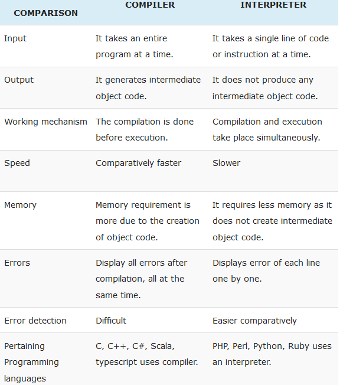

Knowledge Base
Acquisition & refreshment of knowledge based on:
[TOC]
- Interview questions/answers [Qs&As]
- Best practices [Action Items]
- Exercises/idioms/snippets/"easter eggs" [Listings]
- Quizzes/games [Playground]
- ... [...TODO...]
A. Interview questions/answers
A.1 Language Core
A.1.1 Fundamentals
Ground rules glossary: READ IT NOW, BRO!
Q: What is Python? Name some characteristics of Python?
- Python (CPython) is an interpreted language (like PHP, Ruby). That means that, unlike languages like C and its variants, Python does not need to be compiled before it is run (well, some compilation happens)
- Ease of use and ease of refactoring, thanks to the flexibility of Python’s syntax, which makes it especially useful for rapid prototyping.
- Python is dynamically-typed and strongly-typed:
- flexibility - means that you don't need to state the types of variables when you declare them.
x = 111and thenx=" I'm a string"without error; - avoiding pesky implicit-type-conversion - you can't perform operations inappropriate to the type of the object.
e.g.
>>> 'x' + 3will raiseTypeError. details
- flexibility - means that you don't need to state the types of variables when you declare them.
- More compact code, thanks again to Python’s syntax, along with a wealth of functionally-rich Python libraries ( distributed freely with most Python language implementations). Python is well suited to object orientated programming in that it allows the definition of classes along with composition and inheritance. Python does not have access specifiers (like C++'s public, private), the justification for this point is given as "we are all adults here". In Python, functions are first-class objects. This means that they can be assigned to variables, returned from other functions and passed into functions. Classes are also first-class objects
- Python does not support pointers
- Writing Python code is quick but running it is often slower than compiled languages. Fortunately, Python allows the
inclusion of C based extensions so bottlenecks can be optimised away and often are. The
numpypackage is a good example of this, it's really quite quick because a lot of the number crunching it does isn't actually done by Python - Python finds use in many spheres - web applications, automation, scientific modeling, big data applications and many more. It's also often used as "glue" code to get other languages and components to play nice. It’s free and open source! Need we say more?
Q: What are some drawbacks of the Python language?
The two most common valid answers to this question (by no means intended as an exhaustive list) are:
- Global Interpreter Lock (GIL). CPython (the most common Python implementation) is not fully thread safe. In order to support multithreading Python programs, CPython provides a global lock that must be held by the current thread before it can safely access Python objects. As a result, no matter how many threads or processors are present, only one thread is ever being executed at any given time. In comparison, it is worth noting that the PyPy implementation provides a stackless mode that supports micro-threads for massive concurrency.
- Execution speed. Python can be slower than compiled languages since it is interpreted.
Q: Is Python interpreted or compiled?
As noted in Why Are There So Many Pythons?, this is, frankly, a bit of a trick question in that it is malformed. Python itself is nothing more than an interface definition (as is true with any language specification) of which there are multiple implementations. Accordingly, whether “Python” is interpreted or compiled does not apply to the Python language itself; rather, it applies to each specific implementation of the Python specification.
Further complicating the answer to this question is the fact that, in the case of CPython, the answer really is “sort of both”. Specifically, with CPython, code is first ‘compiled’ and then interpreted. More precisely, it is not precompiled to native machine code, but rather to bytecode. While machine code is certainly faster, bytecode is more portable and secure. The bytecode is then interpreted in the case of CPython (or both interpreted and compiled to optimized machine code at runtime in the case of PyPy).
Q: What does “Python is an interpreted language” mean?
In Python, the source is compiled into a much simpler form called bytecode. These are instructions similar in spirit
to CPU instructions. But instead of being executed by the CPU of the target OS, they are executed by a Python Virtual
Machine (PVM)/interpreter. The built-in dis module is the disassembler that can show you bytecode (*.pyc files).
The PVM executes Python programs that have been compiled from the Python language into a bytecode representation. The
PVM assumes that any bytecode being executed is "well-formed" with regard to a number of implicit constraints.
official docs

Q: What are the built-in data types that Python provides? Which of them are immutable/mutable?
Immutable built-in datatypes/structures
-
int,float,bool,str,bytes -
tuple,frozenset
Mutable built-in datatypes/structures
-
list,dict,set,bytearray
Q: What is PEP8?
Style Guide for Python Code. It is the latest Python coding standard, a set of coding recommendations, coding conventions. (Python Enhancement Proposal) One of Guido's key insights is that code is read much more often than it is written. The guidelines provided are intended to improve the readability of code and make it consistent across the wide spectrum of Python code. As PEP 20 says, "Readability counts". A style guide is about consistency. Consistency with this style guide is important. Consistency within a project is more significant. Consistency within one module or function is the most important. more details...
Q: How do I modify a string in Python?
You can’t, because strings are immutable. In most situations, you should simply construct a new string from the various parts you want to assemble it from.
Q: Does Python have an array data type? What is the difference between arrays and lists?
array module defines an object type which can compactly represent an array of basic values: characters, integers,
floating point numbers. Arrays are sequence types and behave very much like lists, except that the type of objects
stored in them is constrained (homogeneous). The type is specified at object creation time by using a type code, which
is a single character. Array objects also implement the buffer interface, and may be used wherever bytes-like objects
are supported. official docs
import array my_array=array.array('i', [1, 2, 3, 4]) # ‘i’ signed int (C type), int (Python type) my_list=[1,'abc', 1.20] # cf. with regular list print(my_array) # array(‘i’, [1, 2, 3, 4]) print(type(my_array)) # <class 'array.array'>
Q: What is pass in Python?
Pass means, no-operation Python statement, or in other words it is a placeholder in compound statement, where there should be a blank left and nothing has to be written there. Python has the syntactical requirement that code blocks cannot be empty. Empty code blocks are however useful in a variety of different contexts, for example if you are designing a new class with some methods that you don't want to implement:
class MyClass(object): # (object) is for Python 2.*
def method_a(self):
pass
def method_b(self):
print("I'm method_b")
If you were to leave out the pass, the code wouldn't run, and you'll get an error:
IndentationError: expected an indented block
Other examples when we could use pass:
- Ignoring (all or) a certain type of
Exception - Deriving an exception class that does not add new behavior
- Testing that code runs properly for a few test values, without caring about the results
Q: Given variables a and b, switch/swap their values so that b has the value of a, and a has the value of b without using an intermediary variable.
a, b = 5, 10 # tuple unpacking a, b = b, a
Q: What is *args, **kwargs in function definition? And why would we use it?
Use args when we aren't sure how many arguments are going to be passed to a function, or if we want to pass a stored list or tuple of arguments to a function. kwargs is used when we don't know how many keyword arguments will be passed to a function, or it can be used to pass the values of a dictionary as keyword arguments. The identifiers args and kwargs are a convention, you could also use bob and **billy but that would not be wise.
def f(*args, **kwargs): print(args, kwargs) l = [1, 2, 3] t = (4, 5, 6) d = {'a': 7, 'b': 8, 'c': 9} f() f(1, 2, 3) # (1, 2, 3) {} f(1, 2, 3, "groovy") # (1, 2, 3, 'groovy') {} f(a=1, b=2, c=3) # () {'a': 1, 'c': 3, 'b': 2} f(a=1, b=2, c=3, zzz="hi") # () {'a': 1, 'c': 3, 'b': 2, 'zzz': 'hi'} f(1, 2, 3, a=1, b=2, c=3) # (1, 2, 3) {'a': 1, 'c': 3, 'b': 2} f(*l, **d) # (1, 2, 3) {'a': 7, 'c': 9, 'b': 8} f(*t, **d) # (4, 5, 6) {'a': 7, 'c': 9, 'b': 8} f(1, 2, *t) # (1, 2, 4, 5, 6) {} f(q="winning", **d) # () {'a': 7, 'q': 'winning', 'c': 9, 'b': 8} f(1, 2, *t, q="winning", **d) # (1, 2, 4, 5, 6) {'a': 7, 'q': 'winning', 'c': 9, 'b': 8} def f2(arg1, arg2, *args, **kwargs): print(arg1, arg2, args, kwargs) f2(1, 2, 3) # 1 2 (3,) {} f2(1, 2, 3, "groovy") # 1 2 (3, 'groovy') {} f2(arg1=1, arg2=2, c=3) # 1 2 () {'c': 3} f2(arg1=1, arg2=2, c=3, zzz="hi") # 1 2 () {'c': 3, 'zzz': 'hi'} f2(1, 2, 3, a=1, b=2, c=3) # 1 2 (3,) {'a': 1, 'c': 3, 'b': 2} f2(*l, **d) # 1 2 (3,) {'a': 7, 'c': 9, 'b': 8} f2(*t, **d) # 4 5 (6,) {'a': 7, 'c': 9, 'b': 8} f2(1, 2, *t) # 1 2 (4, 5, 6) {} f2(1, 1, q="winning", **d) # 1 1 () {'a': 7, 'q': 'winning', 'c': 9, 'b': 8} f2(1, 2, *t, q="winning", **d) # 1 2 (4, 5, 6) {'a': 7, 'q': 'winning', 'c': 9, 'b': 8}
Q: What is docstring in Python?
Python docstrings are the string literals that appear right after the definition of a function, method, class, or module. We can access these docstrings using the doc attribute. PEP 257
def square(n):
“””Takes in a number n, returns the square of n””” # single quotes ‘ are valid as well
return n**2
print(square.__doc__)
print(print.__doc__)
Q: How can you copy an object in Python?
Use copy.copy () or copy.deepcopy() for the general case. You cannot copy all objects but most of them.
x = copy.copy(y) # make a shallow copy of y
x = copy.deepcopy(y) # make a deep copy of y; module specific errors >copy.Error
The difference between shallow and deep copying is only relevant for compound objects (objects that contain other objects, like lists or class instances).
- A shallow copy constructs a new compound object and then (to the extent possible) inserts the same objects into it that the original contains.
- A deep copy constructs a new compound object and then, recursively, inserts copies into it of the objects found in the original.
Python's deep copy operation avoids problems (recursive objects, too much data for copy, e.g. administrative data structures) by:
- keeping a table of objects already copied during the current copying pass
- letting user-defined classes override the copying operation or the set of components copied
Q: When to use a tuple vs list vs dictionary in Python?
- Use a
tuple(immutable) to store a sequence of items that will not change. Tuples are faster than lists; can be hashed for, e.g. as a key for dictionaries. - Use a
list(mutable) to store a sequence of items that may change. Lists are slower than tuples. - Use a
dictwhen you want to associate pairs of two items.
Q: What keywords can be used in conjunction with the for keyword?
[not] in ..., break, continue, pass, else:
The else keyword after for loop specifies a block of code to be executed when the loop is finished normally.
break- Allows loop termination when some condition is met and the control is transferred to the next statement.
continue- Allows skipping some part of a loop when some specific condition is met and the control is transferred to the beginning of the loop
pass- Used when you need some block of code syntactically, but you want to skip its execution. Nothing happens when this is executed.
Q: What could be the dict key?
First, a dictionary key must be of a type that is hashable ~ immutable. For example, you can use an int, float,
str, or bool as a dictionary key. However, neither a list nor another dict can serve as a key, because lists and
dictionaries are mutable (TypeError: unhashable type: 'list'). Values, on the other hand, can be any
type and can be used more than once.
Second, a given key can appear in a dictionary only once (must be unique). Duplicate keys are not allowed. A dictionary maps each key (using hash()) to a corresponding value (creates hashtable), so it doesn’t make sense to map a particular key more than once. If you specify a key a second time during the initial creation of a dictionary, then the second occurrence will override the first. more details...
Q: What's the difference between globals(), locals(), and vars()?
-
globals()always returns the dictionary of the module namespace -
locals()always returns a dictionary of the current namespace (e.g. funcs) -
vars([obj])returns either a dictionary of the current namespace(symbol table) (if called with no argument) or the dictionary of the arguments of any module / class / instance of a class, etc. If the object does not have _dict_ , it will raise aTypeErrorexception (e.g. print(vars(12)) ). We can also use it on a module, to find out all its containing methods, along with other relevant information and even docstrings. more details...
Q: What are local variables and global variables in Python?
- Global Variables: Variables declared outside a function or in global space are called global variables. These variables can be accessed/be referenced by any function in the program.
- Local Variables: Any variable assigned inside a block is known as a local variable. This variable is present in the local space (unless explicitly declared as global) and not in the global space.
Q: How can you share global variables across modules?
To share global variables across modules within a single program, create a special module. Import the config module in all modules of your application. The module will be available as a global variable across modules.
Q: What is slicing in Python?
Select and change (only mutable types) a specific region of the sequence. A mechanism to select a range of items from sequence types like list, tuple, strings etc.:
a = [1, 2, 3, 4, 5]
print(a[0:2]) # Choose elements [0-2), upper-bound non inclusive
print(a[0:-1]) # Choose all but the last
print(a[::-1]) # Reverse the list
print(a[::2]) # Skip by 2
print(a[::-2]) # Skip by -2 from the end
Q: What are sequence comprehensions?
They are short syntax constructions to ease the creation of lists, dicts, tuples, sets based on existing iterable.
# Simple List Append a = [] for x in range(1, 10): a.append(x) print(a) # [1, 2, 3, 4, 5, 6, 7, 8, 9] # List Comprehension print([x for x in a]) A0 = dict(zip(('a', 'b', 'c', 'd', 'e'), (1, 2, 3, 4, 5))) A1 = range(10) A2 = sorted([i for i in A1 if i in A0]) A3 = sorted([A0[s] for s in A0]) A4 = [i for i in A1 if i in A3] A5 = {i: i * i for i in A1} A6 = [[i, i * i] for i in A1] A0 = {'a': 1, 'c': 3, 'b': 2, 'e': 5, 'd': 4} # the order may vary A1 = range(0, 10) A2 = [] A3 = [1, 2, 3, 4, 5] A4 = [1, 2, 3, 4, 5] A5 = {0: 0, 1: 1, 2: 4, 3: 9, 4: 16, 5: 25, 6: 36, 7: 49, 8: 64, 9: 81} A6 = [[0, 0], [1, 1], [2, 4], [3, 9], [4, 16], [5, 25], [6, 36], [7, 49], [8, 64], [9, 81]]
In Python, list comprehensions provide an alternative to using the built-in map() and filter() functions.
Q: What is the negative index in Python?
For slicing/accessing from the end of list, types and other sequences. Python sequences can be indexed with positive and negative numbers. For positive index, 0 is the first index, 1 is the second index and so forth. For negative index, (-1) is the last index and (-2) is the second last index and so forth.
demo_lst = [2, 33, 222, 14, 25]
demo_lst[-1] >> 25.
Q: What is type conversion?
Way of conversion variable of one type to another. For this purpose we use built-in functions, e.g. int(), float(),
str(), bool(), list(), etc.
Q: What is the __init__.py module? What is it for?
The __init__.py files are required to make Python treat the directories as containing packages; this is done to
prevent
directories with a common name, such as string, from unintentionally hiding valid modules that occur later on the module
search path. In the simplest case, init.py can just be an empty file, but it can also execute initialization code (
initializing the module) for the package or set the all variable.
The import statement uses the following convention: if a package’s __init__.py code defines a list named __all__,
it is
taken to be the list of module names that should be imported when from <package_name> import * is encountered.
Q: How do I see the object methods? How do you list the functions in a module?
>>> dir(demo_obj)
>>> dir() # dir calls __dir__() internally
The built-in function dir([object]) with an argument, attempts to return a list of valid attributes/members for that object. Without arguments, return the list of names in the current local scope.
If the object has a method named __dir__(), this method will be called and must return the list of attributes.
This allows objects that implement a custom __getattr__() or __getattribute__() function to customize the
way dir()
reports their attributes.
If the object does not provide __dir__(), the function tries its best to gather information from the
object’s __dict__
attribute, if defined, and from its type object (ancestor classes). The resulting list is not necessarily
complete, and may be inaccurate when the object has a custom __getattr__()
. more details...
| vars() | dir() |
|---|---|
| Returns a dictionary of objects of single class where used | Returns a dictionary of objects of single class where used and its base classes |
| It returns a dictionary corresponding to the current local symbol table when no argument is passed | It returns the list of names in the current local scope when passed no argument |
It returns a dictionary corresponding to the object’s symbol table if a module, class or class instance object as argument (or anything else that has a __dict__ attribute) is passed. |
It attempt to return a list of valid attributes for that object when passed an argument |
As instances builtin types do not have __dict__ attribute, it returns an Error when used in a built-in type instance. |
It can be used with all built-in types without error |
Q: How do you get documentation on objects' methods in Python?
>>> help(some_obj.its_method())
Q: What is a module in Python? What is a Python package? What is the difference between packages and modules?
A module is a file containing Python definitions and statements. The file name is the module name with the suffix
.py appended. Within a module, the module’s name (as a string) is available as the value of the global
variable __name__.
Packages are a way of structuring Python’s module namespaces by using “dotted module names”. Packages contain modules (collection of modules (a “package”)).
Q: How to import modules in Python?
import array # importing using the original module name
import array as arr # importing using an alias name
from array import * # imports everything present in the array module
from <module> import (<func>, <class>, <CONSTANT>) # selective import
Q: What are decorators? How to create a custom decorator?
A decorator is essentially a callable object that is used to modify or extend a function/method or class definition.
One of the beauties of decorators is that a single decorator definition can be applied to multiple functions (or classes). Much can thereby be accomplished with decorators that would otherwise require lots of boilerplate (or even worse redundant!) code. Flask, for example, uses decorators as the mechanism for adding new endpoints to a web application. Examples of some of the more common uses of decorators include adding synchronization, type enforcement, logging, or pre- and post-conditions to a class or function.
Firstly, you have to know or remember that function names are references to functions and that we can assign multiple names/”references” to the same function.
The next important fact is that we can delete one of the references without deleting the function itself. Concepts to understand: Functions as Parameters, Functions returning Functions
import datetime def time_this(original_function): # 1 def new_function(*args, **kwargs): # 2 before = datetime.datetime.now() # 3 x = original_function(*args, **kwargs) # 4 after = datetime.datetime.now() # 5 print("Elapsed Time = {0}".format(after - before)) # 6 return x # 7 return new_function() # 8 @time_this def func_a(stuff): name_of_the_func = func_a.__name__ # do_things # Is equivalent to: def func_a(stuff): # do_things pass func_a = time_this(func_a) # but it has a design problem ‘cause func_a exists in the same program in 2 versions, before decoration and after decoration. It should be noted: this notation can be used only for third-party functions
The decorator returns a modified object, e.g. a modified function, which is bound to the name used in the definition.
-
time_thisis a function just like any other and has one parameter. - Inside time_this we are defining a function. Every time
time_thisexecutes it will create a new function. - Timing code, just like before.
- We call the original function and keep the result for later.
- The rest of the timing code.
- The rest of the timing code.
- The new_function must act just like the original function and so returns the stored result.
- The function created in time_this is finally returned.
The only constraint upon the object returned by the decorator is that it can be used as a function – which basically
means it must be callable. Thus, any classes we use as decorators must implement __call__(). This method is
called, if the instance is called "like a function", i.e. using brackets.
@time_all_class_methods
class ImportantStuff:
def do_stuff_1(self):
...
def do_stuff_2(self):
...
def do_stuff_3(self):
...
Here is the general form of a decorator with arguments and an illustration of its use.
def outer_decorator(*outer_args,**outer_kwargs):
def decorator(fn):
def decorated(*args,**kwargs):
do_something(*outer_args,**outer_kwargs)
return fn(*args,**kwargs)
return decorated
return decorator
@outer_decorator(1,2,3)
def foo(a,b,c):
print(a)
print(b)
print(c)
foo()
You can find an advanced tutorials on how decorators work here1 , here2 , here3
Q: What are @classmethod, @staticmethod, @property?
The decorators that are used on functions defined within classes. Detailed example
- @classmethod: A method that receives the class as an implicit argument (cls) instead of the instance (self); executing in context of the class
-
@staticmethod: A method that does not receive the implicit argument self as a first argument; can access such method from instance and class itself as well.
>>> obj.hello()>>> SomeClass.hello()
-
@property: Create functions for managing the getting, setting and deleting of an attribute.
Q: What is self?
Short Answer: Keyword used as “link” to the current object of class.
Long Answer: self is an instance or an object of a class. In Python, this is explicitly included as the first
parameter.
The self in the __init__ method refers to the newly created object while in other methods, it refers to the object
whose method was called.
Q: What is __init__() in class?
It's a method which is used for customization of the initial state of newly created objects/instances.
def __init__(self, arg1, *data, **kwargs): # __<>__ double underscores = dunder
self.data_name = data[0]
self.other_value = arg1
Q: How to compare values of variables and two objects?
-
Value comparisons: The operators
<,>,==,>=,<=, and!=compare the values of two objects. The objects do not need to have the same type. -
Membership test operations: operators
inandnot intest for membership. x in s evaluates to True if x is a member of s, and False otherwise. x not in s returns the negation of x in s. -
Identity comparisons: operators
isandis nottest for an object’s identity: x is y is True if and only if x and y are the same object. An Object’s identity is determined using theid(). x is not y yields the inverse truth value.
Q: What is __new__() method in class?
__new__() is the first step in instance construction, invoked before __init__. The __new__() is called with the
class as its first argument; its responsibility is to return a new instance of that class. Compare this to __init__:
it is called with an instance as its first argument, and it doesn't return anything; its responsibility
is to initialize the instance.
There are situations where a new instance is created without calling __init__() (for example when the instance is
loaded from a pickle). There is no way to create a new instance without calling new (although in some cases you can
get away with calling a base class's __new__).
Here is an example of a subclass that overrides __new__() - this is how you would normally use it.
class inch(float):
“”Convert from inch to meter.”””
def __new__(cls, arg=0.0):
return float.__new__(cls, arg*0.0254)
print inch(12) # 0.3048
Q: Explain how to make a Python script executable on Unix?
You need to do 2 things:
1) the script file’s mode must be executable and 2) the first line must begin with #! followed by the path of the Python interpreter on your platform.
3) The first is done by executing $ chmod +x scriptfile_name or perhaps $ chmod 755 scriptfile_name.
$ chmod +x myscript.py
The second can be done in a number of ways. The most straightforward way is to put
#!/usr/local/bin/python # !interpreter [arguments] #! - shebang
If you would like the script to be independent of where the Python interpreter lives, you can use the “env” program.
Almost all Unix variants support the following, assuming the python interpreter is in a directory on the user’s $PATH:
more details...
#!/usr/bin/env python
Q: What is pickling and unpickling?
The pickle module implements a fundamental, but powerful algorithm (binary protocols) for serializing and
de-serializing a Python object structure.
- Pickling - is the process whereby a Python object hierarchy is converted into a byte stream (a binary file or bytes-like object)
- Unpickling - is the inverse operation, whereby a byte stream is converted back into an object hierarchy.
import pickle """ The difference between dump and dumps is that dump writes the pickled object to an open file, and dumps returns the pickled object as bytes. The file must be opened for writing in binary mode. The pickled version of the object is exactly the same with both dump and dumps. """ # So, if you did the following for object obj: obj = {} with open("pickle1", "wb") as f: pickle.dump(obj, f) with open("pickle2", "wb") as f: f.write(pickle.dumps(obj)) # b'\x80\x03c__main__\nexample_class\nq\x00)\x81q\x01.' # you'd end up with two files with exactly the same contents. # The same applies to loading - load "unpickles" from an open (readable) file object, and loads uses a bytes object. # un-pickle with open(r"someobject.pickle", "rb") as input_file: reconstituted_object_hierarchy = pickle.load(input_file) my_pickled_object = pickle.dumps({}) pickle.loads(my_pickled_object) # -> # Unpickling the object # {}
Q: What are serialization methods in Python (write some examples)?
In the context of data storage, serialization is the process of translating data structures or object state into a format that can be stored (for example, in a file or memory buffer) or transmitted and reconstructed later. Pickle, YAML, JSON. more details...
Q: How can the ternary operators be used in Python?
Blueprint: value_if_true if condition/expression else value_if_false
Example:
is_nice = True
state = "nice" if is_nice else "not nice"
Q: Does Python have a switch-case statement?
Python doesn't have a switch-case statement until 3.10. Here, you may implement a switch function to use with a dictionary. Else, you may use a set of if-elif-else statements.
def switch_demo(argument): switcher = { 1: "January", 2: "February", 3: "March", 4: "April", 5: "May", 6: "June", 7: "July", 8: "August", 9: "September", 10: "October", 11: "November", 12: "December" } print(switcher.get(argument, "Invalid month")) switch_demo(5) # May
Q: What are iterators?
Iterator it’s an object (can be iterated upon) that has implemented 2 dunders, __iter__() and __next__(),
collectively called the iterator protocol. An object is called iterable if we can get an iterator from it. Most built-in
containers in Python like: list, tuple, string etc. are iterables.
How to iterate over all the items of an iterator?
- Manually with
next() - Automatically by using the
forloop (can iterate over any object that can return an iterator). Is actually implemented as docs.python.org:
# create an iterator object from iterable iter_obj = iter([1, 2, 3]) # infinite loop while True: try: # get the next item element = next(iter_obj) # do something with element except StopIteration: # if StopIteration is raised, break from loop break
Q: What are generators?
Primarily as syntactic sugar for implementing iterators (like it). Generators are regular functions but instead of using
the return statement, they use yield to pass data (“lazy iterator”) back to the caller. Whereas a return statement
disposes of a function’s local state, a yield statement suspends the function and retains its local state.
def repeater(value):
while True:
yield value
>>> repeater('Hey')
<generator object repeater at 0x107bcdbf8>
The code in the generator function only executes when next() is called on the generator object:
generator_obj = repeater('Hey')
next(generator_obj) # ‘Hey’
In practical terms, this means local variables and the execution state of the generator function are only stashed away
temporarily and not thrown out completely. Execution can be resumed at any time by calling next() on the generator.
This makes generators fully compatible with the iterator protocol.
Generators stop generating values as soon as control flow returns from the generator function by any means other
than a yield statement. This means you no longer have to worry about raising StopIteration at all.
def repeat_three_times(value):
yield value
yield value
We’ll take advantage of the fact that Python adds an implicit return None statement to the end of every function.
def bounded_repeater(value, max_repeats):
for i in range(max_repeats):
yield value
- Generator functions are syntactic sugar for writing objects that support the iterator protocol. Generators abstract away much of the boilerplate code needed when writing class-based iterators (75% less code).
- The
yieldstatement allows you to temporarily suspend execution of a generator function and to pass back values from it. - Generators start raising
StopIterationexceptions after control flow leaves the generator function by any means other than ayieldstatement.
Q: What is generator expressions (also called a generator comprehension)?
It has a very similar syntax to list/tuple comprehensions. In this way, we can use the generator without calling a function.
# generator as a function def csv_reader(file_name): for row_ in open(file_name, "r"): yield row_ csv_gen = csv_reader("some_csv.txt") row_count = 0 for row in csv_gen: row_count += 1 print(f"Row count is {row_count}") # Row count is 64186394 # generator expression csv_gen = (row for row in open("file_name.txt"))
They’re also useful in the same cases where list comprehensions are used, with an added benefit: you can create them without building and holding the entire object in memory before iteration. In other words, you’ll have no memory penalty when you use generator expressions. In a nutshell, iterating over a generator expression or list comprehension will essentially do the same thing, but the list comprehension will create the entire list in memory first while the generator expression will create the items on the fly as needed. Generator expressions can therefore be used for very large (and even infinite) sequences and their lazy (i.e., on demand) generation of values results in improved performance and lower memory usage. It is worth noting, though, that the standard Python list methods can be used on the result of a list comprehension, but not directly on that of a generator expression.
Profiling Generator Performance
import sys
nums_squared_lc = [i * 2 for i in range(10000)]
sys.getsizeof(nums_squared_lc) # 87632 bytes, x680 times bigger
nums_squared_gc = (i * 2 for i in range(10000))
sys.getsizeof(nums_squared_gc) # 128 bytes
If speed is an issue and memory isn’t, then a list comprehension is likely a better tool for the job.
Generators have a fixed setup time that must be amortized over how many items are called. List comprehensions are faster initially but will slow substantially as more memory is used with larger data sets. more details...
Q: What is a context manager?
It’s a simple “protocol” (or interface) that your object needs to follow, so it can be used with the with statement.
Basically all you need to do is add __enter__ and __exit__ methods to an object if you want it to function as a
context manager. Python will call these two methods at the appropriate times in the resource management cycle.
A context manager defines the runtime context to be established when executing, e.g. a with statement. The context
manager handles the entry into, and the exit from, the desired runtime context for the execution of the block of code.
Context managers are normally invoked using the with statement, but can also be used by directly invoking their methods.
more details1
, more details2
Typical uses of context managers include saving and restoring various kinds of global state, locking and unlocking resources, closing opened files, etc.
class ManagedFile:
def __init__(self, name):
self.name = name
def __enter__(self):
self.file = open(self.name, 'w')
return self.file
def __exit__(self, exc_type, exc_val, exc_tb):
if self.file:
self.file.close()
Our ManagedFile class follows the context manager protocol and now supports the with statement, just like the
original open() example did:
with ManagedFile('hello.txt') as f:
f.write('hello, world!')
f.write('bye now')
Things to Remember
- The
withstatement simplifies exception handling by encapsulating standard uses oftry/finallystatements in so-called Context Managers. - Most commonly it is used to manage the safe acquisition and release of system resources. Resources are acquired by the
withstatement and released automatically when execution leaves the with context. - Using
witheffectively can help you avoid resource leaks and make your code easier to read.
Q: What is lambda function in Python?
An anonymous function is known as a lambda function. This function can have any number of parameters, but can have just one statement.
a = lambda x, y: x + y # but it's better to avoid giving name to "anonymous" func print(a(5, 6)) print((lambda x, y: x + y)(5, 6))
Q: What do we need if __name__ == "__main__": ?
Its main purpose is to separate the code that will be executed when the code is called as a module (when imported into another script) - and when the module itself is launched as a separate file.
# this means that if this script is executed, then some_func() will be executed
if __name__ == '__main__':
some_func()
Q: What is monkey patching and is it ever a good idea?
Term "monkey patch" refers to dynamic (or run-time) modifications of a class or module, changing the behavior of a function/object after it has already been defined. Most of the time it's a pretty terrible idea - it is usually best if things act in a well-defined way.
To patch module (or class) variables or functions is easy, because Python does not create protected or private entities and in most cases it’s possible to get reference to them.
# third-party library, __init__.py
# gorilla_lib/
# └── __init__.py
class A:
@staticmethod
def func():
print("func() is being called")
DEMO_VAR = ‘don”t change me!’
# our cool tricky hook.py
import gorilla_lib
def monkey_f(self):
print("monkey_f() is being called")
gorilla_lib.DEMO_VAR = ‘sorry, it”s just a programming’
# replacing address of "func" with "monkey_f"
gorilla_lib.A.func = monkey_f
obj_gor = gorilla_lib.A()
# calling function "func" whose address got replaced with function "monkey_f()"
obj_gor.func() # monkey_f() is being called
Q: How are arguments passed by value or by reference?
Background knowledge:
When you pass function arguments by reference, those arguments are only references to existing values. In contrast, when
you pass arguments by value, those arguments become independent copies of the original values.
!!! Python passes arguments neither by reference nor by value, but by assignment. Python does not exactly pass by value.
Let’s prove it. more details...
Using id(obj) (returns an integer representing the memory address), you can verify the following assertions:
- Function arguments initially refer to the same address as their original variables.
- Reassigning the argument within the function gives it a new address while the original variable remains unmodified. In the below example, note that the address of x initially matches that of n but changes after reassignment (for immutable data types), while the address of n never changes. If we have mutable types - after modification the address stays the same.
def main(): n = 9001 print(f"Initial address of n: {id(n)}") increment(n) print(f"Final address of n: {id(n)}") def increment(x): print(f"Initial address of x: {id(x)}") x += 1 print(f"Final address of x: {id(x)}") main() # Initial address of n: 140562586057840 # Initial address of x: 140562586057840 # Final address of x: 140562586057968 # Final address of n: 140562586057840
Q: What is PYTHONPATH?
PYTHONPATH is an environment variable which you can set to add additional directories where Python will look for modules
and packages. Augment the default search path for module files. The format is the same as the shell’s PATH: one or more
directory path names separated by os.pathsep (e.g. “:” on Unix or “;” on Windows). Non-existent directories are silently
ignored.
For most installations, you should not set these variables since they are not needed for Python to run. Python knows
where to find its standard library. The only reason to set PYTHONPATH is to maintain directories of custom Python
libraries that you do not want to install in the global default location (i.e., the site-packages directory).
Q: Duck typing, EAFP and LBYL. How are they connected?
Python follows the duck typing style of coding.
# LBYL - Look Before You Leap if condition := (5 // 2): print('Go!') else: print('don"t go') # EAFP- Easier to Ask Forgiveness than permission try: file = open('file_name.txt') except FileNotFoundError: ...
- duck-typing
- A programming style which does not look at an object’s type to determine if it has the right interface; instead, the method or attribute is simply called or used (“If it looks like a duck and quacks like a duck, it must be a duck.”) By emphasizing interfaces rather than specific types, well-designed code improves its flexibility by allowing polymorphic substitution. Duck-typing avoids tests using type() or isinstance(). (Note, however, that duck-typing can be complemented with abstract base classes.) Instead, it typically employs hasattr() tests or EAFP programming.
- EAFP
- Easier to ask for forgiveness than permission. This common Python coding style assumes the existence of valid keys or attributes and catches exceptions if the assumption proves false. This clean and fast style is characterized by the presence of many try and except statements. The technique contrasts with the LBYL style common to many other languages such as C.
Q: How to return multiple values in Python?
Strictly speaking, a Python function that returns multiple values actually returns a tuple containing each value: def func(): return 1, 2, 3, 4, 5 one, two, three, four, five = func() print(one, two, three, four, five) # tuple unpacking
t = func() # a tuple (1, 2, 3, 4, 5)
Q: Does Python have infinity?
float('-Infinity') # “inf”, “Inf”, “INFINITY” and “iNfINity” are all acceptable spellings Also: nan ::= "nan" numeric_value ::= floatnumber | infinity | nan infinity = float('infinity') hash(infinity) # 314159 hash(float('-inf')) # -314159
Q: How to find the index inside a for loop? Wrap an iterable with ‘enumerate’ and it will yield the item along with its index.
Know the index faster
vowels = ['a', 'e', 'i', 'o', 'u'] for i, letter in enumerate(vowels): print(i, letter)
0, 'a' // 1, 'e' ... Q: Place the following functions below in order of their efficiency. They all take in a list of numbers between 0 and 1. An example input (quite long) list would be [random.random() for i in range(100000)]. How would you prove that your answer is correct? def f1(lIn): l1 = sorted(lIn) l2 = [i for i in l1 if i < 0.5] return [i * i for i in l2]
def f2(lIn): l1 = [i for i in lIn if i < 0.5] l2 = sorted(l1) return [i * i for i in l2]
def f3(lIn): l1 = [i * i for i in lIn] l2 = sorted(l1) return [i for i in l1 if i < (0.5 * 0.5)] Most to least efficient: f2, f1, f3. To prove that this is the case, you would want to profile your code. Python has a lovely profiling package that should do the trick. import cProfile lIn = [random.random() for i in range(100000)]
cProfile.run('f1(lIn)') 4 function calls in 0.045 seconds cProfile.run('f2(lIn)') 4 function calls in 0.024 seconds cProfile.run('f3(lIn)') 4 function calls in 0.055 seconds
Why Care? Locating and avoiding bottlenecks is often pretty worthwhile. A lot of coding for efficiency comes down to common sense
- in the example above it's obviously quicker to sort a list if it's a smaller list, so if you have the choice of filtering before a sort it's often a good idea. The less obvious stuff can still be located through use of the proper tools. It's good to know about these tools.
Q: Consider the two approaches below for initializing an array and the arrays that will result. How will the resulting arrays differ and why should you use one initialization approach vs the other?
INITIALIZING AN ARRAY -- METHOD 1
x = [[1,2,3,4]] * 3 [[1, 2, 3, 4], [1, 2, 3, 4], [1, 2, 3, 4]]
INITIALIZING AN ARRAY -- METHOD 2
y = [[1,2,3,4] for _ in range(3)] [[1, 2, 3, 4], [1, 2, 3, 4], [1, 2, 3, 4]]
WHICH METHOD SHOULD YOU USE AND WHY?
While both methods appear to produce the same result, there is an extremely significant difference between them. Method 2 produces, as you would expect, an array of 3 elements, each of which is itself an independent 4-element array. In method 1, however, the members of the array all point to the same object. This can lead to what is most likely unanticipated and undesired behavior as shown below.
MODIFYING THE x ARRAY FROM THE PRIOR CODE SNIPPET:
x[0][3] = 99 x [[1, 2, 3, 99], [1, 2, 3, 99], [1, 2, 3, 99]]
UH-OH, DON’T THINK YOU WANTED THAT TO HAPPEN!
MODIFYING THE y ARRAY FROM THE PRIOR CODE SNIPPET:
y[0][3] = 99 y [[1, 2, 3, 99], [1, 2, 3, 4], [1, 2, 3, 4]]
THAT’S MORE LIKE WHAT YOU EXPECTED!
Q: How to translate a string of chars into a string containing a binary code (1 and 0)?
using join() + ord() + format()
st = "hello world" ' '.join(format(ord(x), 'b') for x in st) '1101000 1100101 1101100 1101100 1101111 100000 1110111 1101111 ...'
using bytearray
' '.join(format(x, 'b') for x in bytearray(st, 'utf-8')) '1101000 1100101 1101100 1101100 1101111 100000 1110111 1101111 ...' Q: How to check that tuple A contains all elements of tuple B? You can use set.issubset or set.issuperset to check if every element in one tuple or list is in another. tuple1 = (1, 2) tuple2 = (1, 2, 3, 4, 5) set(tuple1).issubset(tuple2) # True set(tuple2).issuperset(tuple1) # True Q: How to check if both tuples contain unique values? len(set(tup)) == len(tup) This creates a set of tup and checks if it is the same length as the original tup. The only case in which they would have the same length is if all elements in tup were unique. Q: Mention the use of / and // operators in Python?
Python 2.7
"/" for integers, act as floor division, for float - returns float value
print 5/2 # 2 print -5/2 # -3 print 5.0/2 # 2.5 print -5.0/2 # -2.5
“//” returns floor value for both integer and floating point arguments
print 5//2 # 2 print -5//2 # -3 print 5.0//2 # 2.0 print -5.0//2 # -3.0 In Python 3, ‘/’ operator does floating point division for both int and float arguments print(5/2) # 2.5 print(-5/2) # -2.5 print(5.0/2) # 2.5 print(-5.0/2) # -2.5 Behavior of “//” is the same in Python 2.7 and Python 3. Q: Mention the use of the split function in Python? str splitted on whitespaces → list of str "words with spaces".split() → ['words','with','spaces'] Q: What will be the output of the following code?
def f(): ... x = 15 ... print(x) ... x = 12 f() # 15 Q: How to convert a string to a number that consists of letters ASCII code. Example: 'abcd' -> 979899100.
Convert String list to ascii values
Method 1: using loop + ord()
test_str = "let’s do more Python!" res1 = '' for elem in test_str: res1 += ‘’.join(str(ord(elem))) print(int(res1)) # sys.getsizeof(res1) >> 106 bytes
Method 2: list comprehension
test_str2 = “let’s do more Python!”
res2 = ''.join([str(ord(elem)) for elem in test_str2])
print(res2) # sys.getsizeof(res2) >> 106 bytes
print(res1 == res2) # True
Q: How to remove empty lines from a list of lines (with a length of 0)?
empty_lines_list = [‘abc’, ‘’, ‘’, ’def’, ‘’, ‘’, 3 , 4, 1, ]
def check_is_empty(line):
return bool(line)
filtered_list = [line for line in empty_lines_list if check_is_empty(line)]
print(filtered_list)
Q: Build a string with the numbers from 0 to 100, "0123456789101112..."
list_of_numbers = ''
for el in range(101):
list_of_numbers += str(el)
print(list_of_numbers)
Q: Making a list with the unique element from a list with duplicate elements
unique_list = set(list_with_dublicates)
Q: How can you randomize the items of a list in Python?
from random import shuffle
x = ['Keep', 'The', 'Blue', 'Flag', 'Flying', 'High']
shuffle(x)
Q: Write a program in Python to produce stars triangle
def star_triangle(r):
for x in range(r):
print(' ' * (r - x - 1) + '*' * (2 * x + 1))
star_triangle(9)
Q: Write a program in Python to check if a sequence is a Palindrome
entered_sequence = input("enter sequence")
reversed_copy = entered_sequence[::-1]
if entered_sequence == reversed_copy:
print("palindrome")
else:
print("Not a palindrome")
Q: Write a one-liner that will count the number of capital letters in a file. Your code should work even if the file is
too big to fit in memory
with open('very_big_text.txt') as f:
multiline solution
count = 0 text = f.read() for character in text: if character.isupper(): count += 1
one-liner
count = sum(1 for line in f for character in line if character.isupper()) print(count) Q: Write a sorting algorithm for a numerical dataset in Python list_of_str_numbers = ["1", "4", "0", "6", "9"] list_of_integers = [int(i) for i in list_of_str_numbers] list_of_integers.sort()
or with sorted() which doesn’t change original list in contrast to sort()
new_sorted_list_of_integers = sorted(list_of_integers) print(list_of_integers, new_sorted_list_of_integers) Standard Library Built-in functions / modules Q: How to display a list of all available modules?
help('modules') The Python Standard Library Q: 30 built-in Python modules you should be using 30 built-in Python modules you better be using Q: Fill in the missing code: def print_directory_contents(sPath): """ This function takes the name of a directory and prints out the paths files within that directory as well as any files contained in contained directories.
This function is similar to os.walk. Please don't
use os.walk in your answer. We are interested in your
ability to work with nested structures.
"""
...fill_this_in...
def print_directory_contents(sPath):
import os
for sChild in os.listdir(sPath):
sChildPath = os.path.join(sPath, sChild)
if os.path.isdir(sChildPath):
print_directory_contents(sChildPath)
else:
print(sChildPath)
Q: Explain how to delete a file in Python?
By using a command os.remove(filename, *, dir_fd=None) or os.unlink(filename). They are equivalent to each other.
Q: Explain how you can generate random numbers in Python?
import random
random.random()
This returns a random floating point number in the range [0, 1)
Q: Explain how you can access a module written in Python from C?
Module = =PyImport_ImportModule("
- a syntax error: raised when the parser detects an incorrect statement, print(0/0))
- an exception: raised when code with correct syntax results in an error, print(0/0) BaseException base class for all built-in exceptions. It is not meant to be directly inherited by user-defined classes (for that, use Exception). Q: Exceptions and How to Raise Them x = 10 if x > 5: raise Exception(f’x needs to be under 5’) print(‘the end’) # raise allows you to throw an exception at any time Q: Assertions and Try/Except
assert (condition), f”optional message if condition is not met”
name = ‘snake’ assert (name == ‘snake’) print(f”name is really {name}”)
assert checks if the condition inside the brackets is True. If it isn’t, then an AssertionError will be raised, and the program will stop.
try:
code to attempt running
if '1' != 1:
raise ‘some error’ will be wrong ‘cause new exception class must inherit from a BaseException.
raise Exception
except ZeroDivisionError:
execute this code if there is an exception generated
print("someError has occurred")
except TypeError:
...
except
Alternatives for handling wide Exceptions: use modules logging, traceback more advanced details
Q: Else, Finally & Exceptions
try: linux_interaction() except AssertionError as error: print(error) else: try: with open('file.log') as file: read_data = file.read() except FileNotFoundError as fnf_error: print(fnf_error) finally: print('Cleaning up, irrespective of any exceptions.')
In the previous code, everything in the finally clause will be executed. It does not matter if you encounter an
exception somewhere in the try or else clauses. more details
Frameworks
Django
Q: Project initialization
$ python -m django --version
$ django-admin startproject
- mysite/settings.py: A settings file is just a module with module-level variables. Because a settings file is a Python module, the following apply:
- It doesn’t allow for Python syntax errors.
- It can assign settings dynamically using normal Python syntax. For example: MY_SETTING = [str(i) for i in range(30)]
- It can import values from other settings files.
Q: Apps
$ python manage.py startapp
Q: Urls - mysite/urls.py: The URL declarations for this Django project; a “table of contents” of your Django-powered site. More >> URL dispatcher. Q: Models A model is the single, definitive source of information about your data. It contains the essential fields and behaviors of the data you’re storing. Generally, each model maps to a single database table.
- Each model is a Python class that subclasses django.db.models.Model.
- Each attribute of the model represents a database field.
- With all of this, Django gives you an automatically-generated database-access API;
from django.db import models
class Person(models.Model): first_name = models.CharField(max_length=30) last_name = models.CharField(max_length=30) first_name and last_name are fields of the model. Each field is specified as a class attribute, and each attribute maps to a database column. The above Person model would create a database table like this: CREATE TABLE myapp_person ( "id" serial NOT NULL PRIMARY KEY, "first_name" varchar(30) NOT NULL, "last_name" varchar(30) NOT NULL ); Q: Templates A template contains the static parts of the desired HTML output as well as some special syntax describing how dynamic content will be inserted. A Django project can be configured with one or several template engines (or even zero if you don’t use templates). Django ships built-in backends for its own template system, creatively called the Django template language (DTL), and for the popular alternative Jinja2. Backends for other template languages may be available from third-parties. A Django template is a text document or a Python string marked-up using the Django template language. Some constructs are recognized and interpreted by the template engine. The main ones are variables and tags. A template is rendered with a context. Rendering replaces variables with their values, which are looked up in the context, and executes tags. Everything else is output as is. The syntax of the Django template language involves four constructs.
- A {{ variable }} outputs a value from the context, which is a dict-like object mapping keys to values. My first name is {{ first_name }}. My last name is {{ last_name }}. With a context of {'first_name': 'John', 'last_name': 'Doe'} >> My first name is John. My last name is Doe.
-
{% Tags %} provide arbitrary logic in the rendering process.
-
{% csrf_token %}; or with arguments: {% cycle 'odd' 'even' %}
-
Some tags require beginning and ending tags: {% if user.is_authenticated %}Hello, {{ user.username }}.{% endif %}
-
Filters transform the values of variables and tag arguments.
- {{ django|title }}; or with an argument: {{ my_date|date:"Y-m-d" }}
-
Comments look like this: {# this won't be rendered #}. A {% comment %} tag provides multi-line comments. Q: Forms In HTML, a form is a collection of elements inside
that allow a visitor to do things like enter text, select options, manipulate objects or controls, and so on, and then send that information back to the server. As well as its elements, a form must specify two things: -
where: the URL to which the data corresponding to the user’s input should be returned
- how: the HTTP method the data should be returned by GET and POST are typically used for different purposes. Any request that could be used to change the state of the system - for example, a request that makes changes in the database - should use POST. GET should be used only for requests that do not affect the state of the system. Django handles three distinct parts of the work involved in forms:
- preparing and restructuring data to make it ready for rendering
- creating HTML forms for the data
- receiving and processing submitted forms and data from the client In the context of a Web application, ‘form’ might refer to that HTML
Tools Package Managers Q: Application dependency management / virtualenv isolation
- pipenv (!ensures compliance with hash-locked dependency specifiers, and eases uninstallation of packages/dependencies): Pipfile+pip+virtualenv
- pip + venv
- pip-tools: set of tools to keep your pinned Python dependencies fresh
-
Poetry (dependency resolver + isolation + build+ packaging + publish to PyPI)
-
setuptools is a collection of enhancements to the Python distutils that allows more easily build and distribute Python distributions, especially ones that have dependencies on other packages.
- pyenv: simple Python version management:
- Let you change the global Python version on a per-user basis.
- Provide support for per-project Python versions.
- Allow you to override the Python version with an environment variable.
- Search commands from multiple versions of Python at a time
- conda is the package management tool for Anaconda Python installations. Anaconda Python is a distribution from Anaconda, Inc specifically aimed at the scientific community, and in particular on Windows where the installation of binary extensions is often difficult. Conda is a completely separate tool from pip, virtualenv and wheel, but provides many of their combined features in terms of package management, virtual environment management and deployment of binary extensions. Conda does not install packages from PyPI and can install only from the official Anaconda repositories, or anaconda.org (a place for user-contributed conda packages), or a local (e.g. intranet) package server. Quality Tools Q: How to perform code analysis for Python? Python Code Quality Authority references pycodestyle: identifies pep8 style violations autopep8: automatically fixes most violations identified by pycodestyle pylint: throws warnings or errors for a combination of programming and style issues; checks compliance with the latter standards, error detection, refactoring help, fully customizable, editor/IDE integration as well as CLI, UML diagrams, CI integration etc. pylintrc/.pylintrc in target directory for module-by-module basis pyflakes: similar to pylint, except never complains about style, faster that pylint/pychecker flake8: the modular source code checker, wraps pyflakes/pycodestyle/maccabe (complexity checker); can skip files with # flake8: noqa or lines with # noqa
setup.cfg - configuration file by projects (also: tox.ini, .flake8) [flake8] ignore = D203 exclude = .git,pycache,docs/source/conf.py,old,build,dist max-complexity = 10
add-trailing-comma: a pre-commit hook that does various style enforcing (not just trailing commas) black: The uncompromising code auto-formatter, sometimes will make a change that just looks really bad; it’s good (if you really want) to use it as a pre-commit hook with default config alongside flake8 for non-style linting. isort: utility/library to sort imports alphabetically, and automatically separated into sections and by type Good combo: autopep8/flake8, black VCS Q: Types of Version Control Systems (VCS) VCSs are broken down into two main categories, (1) centralized and (2) decentralized (also known as distributed). Background knowledge:
- Repository model describes the relationship between various copies of the source code repository. In a (1) client–server model, users access a master repository via a client; typically, their local machines hold only a working copy of a project tree. Changes in one working copy must be committed to the master repository before they are propagated to other users. In a (2) distributed model, repositories act as peers, and users typically have a local repository with version history available, in addition to their working copies.
- Concurrency model describes how changes to the working copy are managed to prevent simultaneous edits from causing nonsensical data in the repository. In a lock model, changes are disallowed until the user requests and receives an exclusive lock on the file from the master repository. In a merge model, users may freely edit files, but are informed of possible conflicts upon checking their changes into the repository, whereupon the version control system may merge changes on both sides, or let the user decide when conflicts arise. Distributed version control systems usually use a merge concurrency model.
Centralized Version Control At the time of this writing, the most popular version control system is known as Apache® Subversion® (trunk). Other: CVS, IBM ClearCase etc. The main concept of a centralized system is that it works in a client and server relationship. The repository is located in one place and provides access to many clients. It’s very similar to FTP in that you have an FTP client which connects to an FTP server. All changes, users, commits and information must be sent and received from this central repository. The primary benefits of Subversion are:
- It is easy to understand.
- You have more control over users and access (since it is served from one place).
- More GUI & IDE clients (Subversion has been around longer).
- Simple to get started. At the same time, Subversion has some drawbacks:
- Dependent on access to the server.
- Hard to manage a server and backups
- It can be slower because every command connects to the server.
- Branching and merging tools are difficult to use.
Distributed Version Control Distributed systems are a newer option. In distributed version control, each user has their own copy of the entire repository, not just the files but the history as well. Think of it as a network of individual repositories. The two most popular distributed version control systems are Git and Mercurial, also BitKeeper, Fossil etc.
The primary benefits of Git and Mercurial are:
- More powerful and detailed change tracking, which means less conflicts.
- No server necessary – all actions except sharing repositories are local (commit offline).
- Branching and merging is more reliable, and therefore used more often.
- It’s fast.
At the same time, Git and Mercurial do have some drawbacks:
- The distributed model is harder to understand.
- It’s new, so not as many GUI clients.
- The revisions are not incremental numbers, which make them harder to reference.
- It can be easier to make mistakes until you are familiar with the model.
Q: Explain GitFlow Background knowledge: When evaluating a workflow for your team, it's most important that you consider your team’s culture. You want the workflow to enhance the effectiveness of your team and not be a burden that limits productivity. Some things to consider when evaluating a Git workflow are:
- Does this workflow scale with team size?
- Is it easy to undo mistakes and errors with this workflow?
- Does this workflow impose any new unnecessary cognitive overhead to the team?
Other common workflows: more details
- Centralized Workflow (for a small team or one developer): All changes are committed into trunk/master branch. This workflow doesn’t require any other branches besides master.
- Feature branching: branching model focused
- Forking Workflow (e.g. PR to open-source projects)
Gitflow more details
Q: Terminology official docs, more details branch A "branch" is an active line of development. commit As a noun: A single point in the Git history; the entire history of a project is represented as a set of interrelated commits. The word "commit" is often used by Git in the same places other revision control systems use the words " revision" or "version". Also used as a shorthand for commit object. As a verb: The action of storing a new snapshot of the project’s state in the Git history, by creating a new commit representing the current state of the index and advancing HEAD to point at the new commit. commit object An object which contains the information about a particular revision, such as parents, committer, author, date and the tree object which corresponds to the top directory of the stored revision. hash In Git context, synonym for object name. head A named reference to the commit at the tip of a branch. Heads are stored in a file in $GIT_DIR/refs/heads/ directory, except when using packed refs. (See git-pack-refs[1].) HEAD The current branch. In more detail: Your working tree is normally derived from the state of the tree referred to by HEAD. HEAD is a reference to one of the heads in your repository, except when using a detached HEAD, in which case it directly references an arbitrary commit. master The default development branch. Whenever you create a Git repository, a branch named "master" is created, and becomes the active branch. In most cases, this contains the local development, though that is purely by convention and is not required. origin The default upstream repository. Most projects have at least one upstream project which they track. By default origin is used for that purpose. New upstream updates will be fetched into remote-tracking branches named origin/name-of-upstream-branch, which you can see using git branch -r. There may also be an upstream repository where a third copy of the project is hosted and maintained by a different set of contributors. rebase To reapply a series of changes from a branch to a different base, and reset the head of that branch to the result. repository A collection of commits, and branches and tags to identify commits. SCM Source code management (tool). SHA-1 "Secure Hash Algorithm 1"; a cryptographic hash function. In the context of Git used as a synonym for object name. stash entry An object used to temporarily store the contents of a dirty working directory and the index for future reuse. tag A ref under refs/tags namespace that points to an object of an arbitrary type. A tag is most typically used to mark a particular point in the commit ancestry chain. working tree The tree of actual checked out files. The working tree normally contains the contents of the HEAD commit’s tree, plus any local changes that you have made but not yet committed.
Software Design and Development Process Networking Q: Fundamentals of HTTP/HTTPS They are application layer protocols designed to transfer information between networked devices and run on top of other layers of the network protocol stack. A typical flow over HTTP involves a client machine making a request to a server, which then sends a response message. As a request-response protocol, HTTP gives users a way to interact with web resources such as HTML files by transmitting hypertext messages between clients and servers, sometimes via proxies. HTTP clients generally use Transmission Control Protocol (TCP) connections to communicate with servers. Can DDoS Attacks Be Launched Over HTTP? Keep in mind that HTTP is a “stateless” protocol, which means that each command runs independent of any other command. In the original spec, HTTP requests each created and closed a TCP connection. In newer versions of the HTTP protocol ( HTTP 1.1 and above), persistent connection allows for multiple HTTP requests to pass over a persistent TCP connection, improving resource consumption. In the context of DoS or DDoS attacks, HTTP requests in large quantities can be used to mount an attack on a target device. more details, more details2, more on HTTP/2 Q: What is DNS? The Domain Name System (DNS) is the phonebook of the Internet. Humans access information online through domain names, like nytimes.com or espn.com. Web browsers interact through Internet Protocol (IP) addresses. DNS translates domain names to IP addresses so browsers can load Internet resources. Each device connected to the Internet has a unique IP address which other machines use to find the device. DNS servers eliminate the need for humans to memorize IP addresses such as 192.168.1.1 (in IPv4), or more complex newer alphanumeric IP addresses such as 2400:cb00:2048:1::c629:d7a2 (in IPv6).
The 8 steps in a DNS lookup:
- A user types ‘example.com’ into a web browser and the query travels into the Internet and is received by a DNS recursive resolver.
- The resolver then queries a DNS root nameserver (.).
- The root server then responds to the resolver with the address of a Top Level Domain (TLD) DNS server (such as .com or .net), which stores the information for its domains. When searching for example.com, our request is pointed toward the .com TLD.
- The resolver then makes a request to the .com TLD.
- The TLD server then responds with the IP address of the domain’s nameserver, example.com.
- Lastly, the recursive resolver sends a query to the domain’s nameserver.
- The IP address for example.com is then returned to the resolver from the nameserver.
- The DNS resolver then responds to the web browser with the IP address of the domain requested initially. Once the 8 steps of the DNS lookup have returned the IP address for example.com, the browser is able to make the request for the web page
- The browser makes a HTTP request to the IP address.
- The server at that IP returns the webpage to be rendered in the browser (step 10). more details
Q: Explain how request / response work What’s in an HTTP request? Each HTTP request made across the Internet carries with it a series of encoded data that carries different types of information. A typical HTTP request contains:
- HTTP version type
- a URL
- an HTTP method
- HTTP request headers
- Optional HTTP body What’s in an HTTP response? An HTTP response is what web clients (often browsers) receive from an Internet server in answer to an HTTP request. These responses communicate valuable information based on what was asked for in the HTTP request. A typical HTTP response contains:
- an HTTP status code
- HTTP response headers
- optional HTTP body
Q: Describe the client / server model The Client-server model is a distributed application structure that partitions tasks or workload between the providers of a resource or service, called servers, and service requesters called clients. In the client-server architecture, when the client computer sends a request for data to the server through the internet, the server accepts the requested process and delivers the data packets requested back to the client. Clients do not share any of their resources. Examples of Client-Server Model are Email, World Wide Web, etc. How does the Client-Server Model work ? In this article we are going to take a dive into the Client-Server model and have a look at how the Internet works via web browsers. This article will help us in having a solid foundation of the WEB and help in working with WEB technologies with ease.
- Client: When we talk about the word Client, it means to talk of a person or an organization using a particular service. Similarly in the digital world a Client is a computer (Host) i.e. capable of receiving information or using a particular service from the service providers (Servers).
- Servers: Similarly, when we talk about the word Servers, It means a person or medium that serves something. Similarly in this digital world a Server is a remote computer which provides information (data) or access to particular services.
So, it's basically the Client requesting something and the Server serving it as long as its present in the database.
How does the browser interact with the servers ?
- User enters the URL(Uniform Resource Locator) of the website or file. The Browser then requests the DNS(DOMAIN NAME SYSTEM) Server.
- DNS Server lookup for the address of the WEB Server.
- DNS Server responds with the IP address of the WEB Server.
- Browser sends over an HTTP/HTTPS request to WEB Server’s IP (provided by DNS server).
- Server sends over the necessary files of the website.
- Browser then renders the files and the website is displayed. This rendering is done with the help of DOM (Document Object Model) interpreter, CSS interpreter and JS Engine collectively known as the JIT or (Just in Time) Compilers.
Advantages of Client-Server model:
- Centralized system with all data in a single place.
- Cost efficiency requires less maintenance cost and Data recovery is possible.
- The capacity of the Client and Servers can be changed separately.
Disadvantages of Client-Server model:
- Clients are prone to viruses, Trojans and worms if present in the Server or uploaded into the Server.
- Servers are prone to Denial of Service (DOS) attacks.
- Data packets may be spoofed or modified during transmission.
- Phishing or capturing login credentials or other useful information of the user are common and MITM(Man in the Middle) attacks are common.
Multithreaded Programming Q: Can you write multithreading applications in Python? What is the difference between multithreading, multiprocessing? There are two types of multitasking in OS:
- Thread-based parallelism (Multithreading)
- Process-based parallelism (Multiprocessing) Multithreading in Python is sort of a myth. There's technically nothing forbidding multiple threads from trying to access the same resource at the same time. The result is usually not desirable, so things like locks, mutexes, and resource managers were developed. They're all different ways to ensure that only one thread can access a given CPU resource at a time (aka GIL). In essence, they make threads play nice together. However, if a lot of the threads' time is spent waiting for resources, you're not getting any benefits from multithreading, and you'd be better off writing a single-threaded program instead (or restructuring your program to avoid the waiting). “True” multithreading can be used only when the dependency between individual threads does not exist. That being said, in CPython (the most prevalent Python implementation), there's this evil necessity called the Global Interpreter Lock (GIL). In order to make the dynamic memory management in CPython work correctly, the GIL prevents multiple threads from running Python code at the same time. This is because CPython's dynamic memory management is not thread-safe - it can have those same problems of multiple threads accessing (or worse, disposing) the same resource at the same time. Python threads still work for I/O bound tasks as opposed to CPU bound tasks which may cause deadlocks and race conditions. The GIL was a compromise between the 2 extremes of not allowing multi-threaded code, and having the dynamic memory management be very bulky and slow. Jython, IronPython (but not PyPy) don't have a GIL, because the platforms they are built on (Java, .NET) handle dynamic memory management differently, and so can safely run the Python code in multiple threads at the same time. There are reasons to use the threading package. If you want to run some things simultaneously, and efficiency is not a concern, then it's totally fine and convenient. Or if you are running code that needs to wait for something (like some IO) then it could make a lot of sense. But the threading library won't let you use extra CPU cores. Multi-threading can be outsourced to the OS (by doing multi-processing), some external application that calls your Python code (eg, Spark or Hadoop), or some code that your Python code calls (eg, you could have your Python code call a C function that does the expensive multi-threaded stuff). If you're using CPython, it's highly recommended to use the multiprocessing module instead. Rather than running multiple threads, it runs multiple processes (each with their own GIL, so they can all run at the same time). It's much more effective than multithreading. The alternative is to write your multithreaded code in C/C++ as an extension, because native code is not subject to the GIL. However, that's usually a lot more work, and the payoff is usually not worth the effort. Q: Explain the basic primitives and multithreading concept of Python What Is a Thread? A thread is a separate flow of execution. This means that your program will have two things happening at once. But for most Python 3 implementations the different threads do not actually execute at the same time: they merely appear to.
It’s tempting to think of threading as having two (or more) different processors running on your program, each one doing an independent task at the same time. That’s almost right. The threads may be running on different processors, but they will only be running one at a time.
Getting multiple tasks running simultaneously requires a non-standard implementation of Python, writing some of your code in a different language, or using multiprocessing which comes with some extra overhead.
Because of the way CPython implementation of Python works, threading may not speed up all tasks. This is due to interactions with the GIL that essentially limit one Python thread to run at a time. Tasks that spend much of their time waiting for external events are generally good candidates for threading. Problems that require heavy CPU computation and spend little time waiting for external events might not run faster at all.
This is true for code written in Python and running on the standard CPython implementation. If your threads are written in C they have the ability to release the GIL and run concurrently. If you are running on a different Python implementation, check with the documentation to see how it handles threads.
If you are running a standard Python implementation, writing in only Python, and have a CPU-bound problem, you should check out the multiprocessing module instead.
Architecting your program to use threading can also provide gains in design clarity. Using threading in them helps to make the design cleaner and easier to reason about.
To start a separate thread, you create a Thread instance and then tell it to .start(): x = threading.Thread(target=thread_function, args=(1,)) x.start() When you create a Thread, you pass it a function and a list containing the arguments to that function. In this case, you’re telling the Thread to run thread_function() and to pass it 1 as an argument.
Q: Explain the concept of the general synchronization blocks (like mutex, semaphore)
Proper synchronization between multiple threads. Using Locks threading module provides a Lock class to deal with the race conditions. Lock is implemented using a Semaphore object provided by the Operating System. A semaphore is a synchronization object that controls access by multiple processes/threads to a common resource in a parallel programming environment. It is simply a value in a designated place in operating system (or kernel) storage that each process/thread can check and then change. Depending on the value that is found, the process/thread can use the resource or will find that it is already in use and must wait for some period before trying again. Semaphores can be binary (0 or 1) or can have additional values. Typically, a process/thread using semaphores checks the value and then, if it is using the resource, changes the value to reflect this so that subsequent semaphore users will know to wait. A semaphore manages an internal counter which is decremented by each acquire() call and incremented by each release() call. The counter can never go below zero; when acquire() finds that it is zero, it blocks, waiting until some other thread calls release(). Deprecated since version 2.6: The mutex module has been removed in Python 3. Theory Python-concurrency advanced things about threading
Object-Oriented Design/Architecture Approaches Summary:
- Classes in Python are objects too
- Dynamically changing and adding class attributes is allowed
- The life cycle of an object can be managed
- Many operators can be reloaded
- Many of the built-in object methods can be emulated
- Syntax conventions are used to hide internal data
- Inheritance is supported
- Polymorphism is provided by the virtuality of all methods
- Metaprogramming is available
Q: Does Python fully support OOP?
Yes. Python supports all the concepts of "object oriented programming" (Classes, Encapsulation, Polymorphism, Inheritance) but it is NOT fully object-oriented because the code in Python can also be written without creating classes.
Q: Tell a brief overview of the 4 Python coding styles
- Functional: Every statement is treated as a mathematical equation and any forms of state or mutable data are avoided. The main advantage of this approach is that it lends itself well to parallel processing because there is no state to consider. Many developers prefer this coding style for recursion and for lambda calculus. (Note that Python’s implementation of functional programming deviates from the standard—read, is impure— because it’s possible to maintain state and create side effects if you’re not careful. If you need a pure functional programming implementation, Haskell may be a better choice.)
- Imperative: Computation is performed as a direct change to program state. This style is especially useful when manipulating data structures and produces elegant yet simple code. Python fully implements this paradigm.
- Object-oriented: Relies on data fields that are treated as objects and manipulated only through prescribed methods. Python doesn’t fully support this paradigm (debatable) because it can’t implement features such as data hiding ( encapsulation), which many believe is a primary requirement of the object-oriented programming paradigm. This coding style also favors code reuse.
- Procedural: Tasks are treated as step-by-step iterations where common tasks are placed in functions that are called as needed. This coding style favors iteration, sequencing, selection, and modularization. Python excels in implementing this particular paradigm. more details Q: Explain Encapsulation in Python The idea that data inside the object should only be accessed through a public interface – that is, the object’s methods, public getter and setter. Encapsulation is a process of wrapping methods and data together into a single unit. In Python, encapsulation is not enforced by the language, but there is a convention that we can use to indicate that a property is intended to be private and is not part of the object’s public interface: we begin its name with an _ underscore/__dunder.
_spam >> “private”, just a convention “Private” instance variables that cannot be accessed except from inside an object don’t exist in Python. A name prefixed with an underscore (e.g. _spam) should be treated as a non-public part of the API (whether it is a function, a method or a data member).
spam >> half-protected with AttributeError if try direct access and full access via
Q: Explain Inheritance in Python with an example
Inheritance is a way of creating a new class and gaining all the attributes/methods of another class without modifying it. The class from which we are inheriting is called super class and the class that is inherited is called a derived / child class. Inheritance provides the following properties:
- It represents real-world relationships well (with composition concept)
- It provides reusability of code. We don’t have to write the same code again and again. Also, it allows us to add more features to a class without modifying it
- It is transitive in nature, which means that if class B inherits from another class A, then all the subclasses of B would automatically inherit from class A They are different types of inheritance supported by Python:
- Single Inheritance – where a derived class acquires the members of a single super class (aka child/one parent)
- Multiple Inheritance – a derived class is inherited from more than one base class (aka child/parents)
- Multilevel Inheritance – a derived class d1 is inherited from base class b1, and b1 is inherited from b0 (aka child and grandfather)
- Hierarchical inheritance – from one base class you can inherit any number of child classes (aka many childs/parent)
- Hybrid Inheritance – consisting of multiple types of inheritance more details
class A(object): def go(self): print("go A go!") def stop(self): print("stop A stop!") def pause(self): raise Exception("Not Implemented")
class B(A): def go(self): super(B, self).go() print("go B go!")
class C(A): def go(self): super(C, self).go() print("go C go!") def stop(self): super(C, self).stop() print("stop C stop!")
class D(B,C): def go(self): super(D, self).go() print("golD go!") def stop(self): super(D, self).stop() print("stop D stop!") def pause(self): print("wait D wait!")
class E(B,C): pass
Q: Explain Abstraction in Python
It is providing only the required details and hiding the implementation from the world. It can be achieved by using interfaces and abstract classes.
Q: Explain Polymorphism in Python
Using the same interface for multiple forms (data types).
- Child class redefines the parent method (which is called in this case “virtual”), has the same name and does the same thing in different ways. class Mammal: def move(self): print(‘move’)
class Hare(Mammal): def move(self): print(‘jump’)
animal = Mammal() animal.move() # ‘move’ hare = Hare() hare.move() # ‘jump’ However, we can also access the methods of the ancestor either by direct call or using the super(): class Parent(): def init(self): print('Parent init')
def method(self):
print('Parent method')
class Child(Parent): def init(self): Parent.init(self)
def method(self):
super().method()
child = Child() # Parent init child.method() # Parent method
- Classes that are not related by kinship can have the same interface with different implementations.
class English: def greeting(self): print("Hello")
class French: def greeting(self): print("Bonjour") def intro(language): language.greeting()
john = English() gerard = French() intro(john) # Hello intro(gerard) # Bonjour
Q: Composition and object construction
Composition is an OOD concept that models a relationship. In composition, a class known as composite contains an object of another class known as component. In other words, a composite class has-a component of another class. Composition allows composite classes to reuse the implementation of the components it contains. The composite class doesn’t inherit the component class interface, but it can leverage its implementation. The composition relation between two classes is considered loosely coupled. That means that changes to the component class rarely affect the composite class, and changes to the composite class never affect the component class. This provides better adaptability to change and allows applications to introduce new requirements without affecting existing code. When looking at 2 competing software designs, based on inheritance vs based on composition, the composition solution usually is the most flexible. more details Relationships like this can be one-to-one, one-to-many or many-to-many, and they can be unidirectional or bidirectional, depending on the specifics of the roles which the objects fulfil. According to some formal definitions the term composition implies that the two objects are quite strongly linked – one object can be thought of as belonging exclusively to the other object. If the owner object ceases to exist, the owned object will probably cease to exist as well. Aggregation - if the link between two objects is weaker, and neither object has exclusive ownership of the other. more details
Refactoring
Q: Explain most common “Bad smells in code”
- Correctness: Anti-patterns that will literally break your code or make it do the wrong things.
- Maintainability: Anti-patterns that will make your code hard to maintain or extend.
- Readability: Anti-patterns that will make your code hard to read or understand.
- Performance: Anti-patterns that will unnecessarily slow your code down.
- Security: Anti-patterns that will pose a security risk to your program.
- E.g. Mutable default arguments, Broad exceptions, Suppressed inspections, Variables named the same as built-ins, Complex comprehensions, especially if nested, Comments like, “I'm not sure how this works.” more 'code smells' examples, Python-anti-patterns book, Transforming Code into Beautiful, Idiomatic Python Other classification:Bloaters, Object-Orientation Abusers, Change Preventers, Dispensables, Couplers
Q: Explain the most common “Composing Methods” strategies
Much of refactoring is devoted to correctly composing methods. In most cases, excessively long methods are the root of all evil. The vagaries of code inside these methods conceal the execution logic and make the method extremely hard to understand—and even harder to change. The refactoring techniques in this group streamline methods, remove code duplication, and pave the way for future improvements. more details $ Extract Method Problem: You have a code fragment that can be grouped together. Solution: Move this code to a separate new method (or function) and replace the old code with a call to the method.
$ Inline Method Problem: When a method body is more obvious than the method itself, use this technique. Solution: Replace calls to the method with the method’s content and delete the method itself.
$ Extract Variable Problem: You have an expression that’s hard to understand. Solution: Place the result of the expression or its parts in separate variables that are self-explanatory.
$ Inline Temp Problem: You have a temporary variable that’s assigned the result of a simple expression and nothing more. Solution: Replace the references to the variable with the expression itself.
$ Replace Temp with Query Problem: You place the result of an expression in a local variable for later use in your code. Solution: Move the entire expression to a separate method and return the result from it. Query the method instead of using a variable. Incorporate the new method in other methods, if necessary.
$ Split Temporary Variable Problem: You have a local variable that’s used to store various intermediate values inside a method (except for cycle variables). Solution: Use different variables for different values. Each variable should be responsible for only one particular thing.
$ Remove Assignments to Parameters Problem: Some value is assigned to a parameter inside method’s body. Solution: Use a local variable instead of a parameter.
$ Replace Method with Method Object Problem: You have a long method in which the local variables are so intertwined that you can’t apply Extract Method. Solution: Transform the method into a separate class so that the local variables become fields of the class. Then you can split the method into several methods within the same class.
$ Substitute Algorithm Problem: So you want to replace an existing algorithm with a new one? Solution: Replace the body of the method that implements the algorithm with a new algorithm. Q: Explain the most common “Moving Features Between Objects” strategies Even if you have distributed functionality among different classes in a less-than-perfect way, there’s still hope. These refactoring techniques show how to safely move functionality between classes, create new classes, and hide implementation details from public access.
$ Move Method Problem: A method is used more in another class than in its own class. Solution: Create a new method in the class that uses the method the most, then move code from the old method to there. Turn the code of the original method into a reference to the new method in the other class or else remove it entirely.
$ Move Field Problem: A field is used more in another class than in its own class. Solution: Create a field in a new class and redirect all users of the old field to it.
$ Extract Class Problem: When one class does the work of two, awkwardness results. Solution: Instead, create a new class and place the fields and methods responsible for the relevant functionality in it.
$ Inline Class Problem: A class does almost nothing and isn’t responsible for anything, and no additional responsibilities are planned for it. Solution: Move all features from the class to another one.
$ Hide Delegate Problem: The client gets object B from a field or method of object А. Then the client calls a method of object B. Solution: Create a new method in class A that delegates the call to object B. Now the client doesn’t know about, or depend on, class B.
$ Remove Middle Man Problem: A class has too many methods that simply delegate to other objects. Solution: Delete these methods and force the client to call the end methods directly.
$ Introduce Foreign Method Problem: A utility class doesn’t contain the method that you need and you can’t add the method to the class. Solution: Add the method to a client class and pass an object of the utility class to it as an argument.
$ Introduce Local Extension Problem: A utility class doesn’t contain some methods that you need. But you can’t add these methods to the class. Solution: Create a new class containing the methods and make it either the child or wrapper of the utility class.
Q: Explain the most common “Organizing Data” strategies
These refactoring techniques help with data handling, replacing primitives with rich class functionality. Another important result is untangling of class associations, which makes classes more portable and reusable. $ Self Encapsulate Field Problem: You use direct access to private fields inside a class. Solution: Create a getter and setter for the field, and use only them for accessing the field.
$ Replace Data Value with Object Problem: A class (or group of classes) contains a data field. The field has its own behavior and associated data. Solution: Create a new class, place the old field and its behavior in the class, and store the object of the class in the original class.
$ Change Value to Reference Problem: So you have many identical instances of a single class that you need to replace with a single object. Solution: Convert the identical objects to a single reference object.
$ Change Reference to Value Problem: You have a reference object that’s too small and infrequently changed to justify managing its life cycle. Solution: Turn it into a value object.
$ Replace Array with Object Problem: You have an array that contains various types of data. Solution: Replace the array with an object that will have separate fields for each element.
$ Duplicate Observed Data Problem: Is domain data stored in classes responsible for the GUI? Solution: Then it’s a good idea to separate the data into separate classes, ensuring connection and synchronization between the domain class and the GUI.
$ Change Unidirectional Association to Bidirectional Problem: You have two classes that each need to use the features of the other, but the association between them is only unidirectional. Solution: Add the missing association to the class that needs it.
$ Change Bidirectional Association to Unidirectional Problem: You have a bidirectional association between classes, but one of the classes doesn’t use the other’s features. Solution: Remove the unused association.
$ Replace Magic Number with Symbolic Constant Problem: Your code uses a number that has a certain meaning to it. Solution: Replace this number with a constant that has a human-readable name explaining the meaning of the number.
$ Encapsulate Field Problem: You have a public field. Solution: Make the field private and create access methods for it.
$ Encapsulate Collection Problem: A class contains a collection field and a simple getter and setter for working with the collection. Solution: Make the getter-returned value read-only and create methods for adding/deleting elements of the collection.
$ Replace Type Code with Class Problem: A class has a field that contains type code. The values of this type aren’t used in operator conditions and don’t affect the behavior of the program. Solution: Create a new class and use its objects instead of the type code values.
$ Replace Type Code with Subclasses Problem: You have a coded type that directly affects program behavior (values of this field trigger various code in conditionals). Solution: Create subclasses for each value of the coded type. Then extract the relevant behaviors from the original class to these subclasses. Replace the control flow code with polymorphism.
$ Replace Type Code with State/Strategy Problem: You have a coded type that affects behavior but you can’t use subclasses to get rid of it. Solution: Replace type code with a state object. If it’s necessary to replace a field value with type code, another state object is “plugged in”.
$ Replace Subclass with Fields Problem: You have subclasses differing only in their (constant-returning) methods. Solution: Replace the methods with fields in the parent class and delete the subclasses.
Q: Explain the most common “Simplifying Conditional Expressions” strategies Conditionals tend to get more and more complicated in their logic over time, and there are yet more techniques to combat this as well. $ Decompose Conditional Problem: You have a complex conditional (if-then/else or switch). Solution: Decompose the complicated parts of the conditional into separate methods: the condition, then and else.
$ Consolidate Conditional Expression Problem: You have multiple conditionals that lead to the same result or action. Solution: Consolidate all these conditionals in a single expression.
$ Consolidate Duplicate Conditional Fragments Problem: Identical code can be found in all branches of a conditional. Solution: Move the code outside of the conditional.
$ Remove Control Flag Problem: You have a boolean variable that acts as a control flag for multiple boolean expressions. Solution: Instead of the variable, use break, continue and return.
$ Replace Nested Conditional with Guard Clauses Problem: You have a group of nested conditionals and it’s hard to determine the normal flow of code execution. Solution: Isolate all special checks and edge cases into separate clauses and place them before the main checks. Ideally, you should have a “flat” list of conditionals, one after the other.
$ Replace Conditional with Polymorphism Problem: You have a conditional that performs various actions depending on object type or properties. Solution: Create subclasses matching the branches of the conditional. In them, create a shared method and move code from the corresponding branch of the conditional to it. Then replace the conditional with the relevant method call. The result is that the proper implementation will be attained via polymorphism depending on the object class.
$ Introduce Null Object Problem: Since some methods return null instead of real objects, you have many checks for null in your code. Solution: Instead of null, return a null object that exhibits the default behavior.
$ Introduce Assertion Problem: For a portion of code to work correctly, certain conditions or values must be true. Solution: Replace these assumptions with specific assertion checks. Q: Explain the most common “Simplifying Method Calls” strategies These techniques make method calls simpler and easier to understand. This, in turn, simplifies the interfaces for interaction between classes. $ Rename Method Problem: The name of a method doesn’t explain what the method does. Solution: Rename the method.
$ Add Parameter Problem: A method doesn’t have enough data to perform certain actions. Solution: Create a new parameter to pass the necessary data.
$ Remove Parameter Problem: A parameter isn’t used in the body of a method. Solution: Remove the unused parameter.
$ Separate Query from Modifier Problem: Do you have a method that returns a value but also changes something inside an object? Solution: Split the method into two separate methods. As you would expect, one of them should return the value and the other one modifies the object.
$ Parameterize Method Problem: Multiple methods perform similar actions that are different only in their internal values, numbers or operations. Solution: Combine these methods by using a parameter that will pass the necessary special value.
$ Replace Parameter with Explicit Methods Problem: A method is split into parts, each of which is run depending on the value of a parameter. Solution: Extract the individual parts of the method into their own methods and call them instead of the original method.
$ Preserve Whole Object Problem: You get several values from an object and then pass them as parameters to a method. Solution: Instead, try passing the whole object.
$ Replace Parameter with Method Call Problem: Calling a query method and passing its results as the parameters of another method, while that method could call the query directly. Solution: Instead of passing the value through a parameter, try placing a query call inside the method body.
$ Introduce Parameter Object Problem: Your methods contain a repeating group of parameters. Solution: Replace these parameters with an object.
$ Remove Setting Method Problem: The value of a field should be set only when it’s created, and not change at any time after that. Solution: So remove methods that set the field’s value.
$ Hide Method Problem: A method isn’t used by other classes or is used only inside its own class hierarchy. Solution: Make the method private or protected.
$ Replace Constructor with Factory Method Problem: You have a complex constructor that does something more than just setting parameter values in object fields. Solution: Create a factory method and use it to replace constructor calls.
$ Replace Error Code with Exception Problem: A method returns a special value that indicates an error? Solution: Throw an exception instead.
$ Replace Exception with Test Problem: You throw an exception in a place where a simple test would do the job? Solution: Replace the exception with a condition test.
Q: Explain the most common “Dealing with Generalization” strategies Abstraction has its own group of refactoring techniques, primarily associated with moving functionality along the class inheritance hierarchy, creating new classes and interfaces, and replacing inheritance with delegation and vice versa. $ Pull Up Field Problem: Two classes have the same field. Solution: Remove the field from subclasses and move it to the superclass.
$ Pull Up Method Problem: Your subclasses have methods that perform similar work. Solution: Make the methods identical and then move them to the relevant superclass.
$ Pull Up Constructor Body Problem: Your subclasses have constructors with code that’s mostly identical. Solution: Create a superclass constructor and move the code that’s the same in the subclasses to it. Call the superclass constructor in the subclass constructors.
$ Push Down Method Problem: Is behavior implemented in a superclass used by only one (or a few) subclasses? Solution: Move this behavior to the subclasses.
$ Push Down Field Problem: Is a field used only in a few subclasses? Solution: Move the field to these subclasses.
$ Extract Subclass Problem: A class has features that are used only in certain cases. Solution: Create a subclass and use it in these cases.
$ Extract Superclass Problem: You have two classes with common fields and methods. Solution: Create a shared superclass for them and move all the identical fields and methods to it.
$ Extract Interface Problem: Multiple clients are using the same part of a class interface. Another case: part of the interface in two classes is the same. Solution: Move this identical portion to its own interface.
$ Collapse Hierarchy Problem: You have a class hierarchy in which a subclass is practically the same as its superclass. Solution: Merge the subclass and superclass.
$ Form Template Method Problem: Your subclasses implement algorithms that contain similar steps in the same order. Solution: Move the algorithm structure and identical steps to a superclass, and leave implementation of the different steps in the subclasses.
$ Replace Inheritance with Delegation Problem: You have a subclass that uses only a portion of the methods of its superclass (or it’s not possible to inherit superclass data). Solution: Create a field and put a superclass object in it, delegate methods to the superclass object, and get rid of inheritance.
$ Replace Delegation with Inheritance Problem: A class contains many simple methods that delegate to all methods of another class. Solution: Make the class a delegate inheritor, which makes the delegating methods unnecessary. Data Types and Algorithms Q: What are arrays, linked lists, sets, dicts (hash maps)? Data structures are the fundamental constructs around which you build your programs. Each data structure provides a particular way of organizing data so it can be accessed efficiently, depending on your use case. Python ships with an extensive set of data structures in its standard library.
Full article on described TOC below
- Dictionaries, Maps, and Hash Tables
- dict: Your Go-To Dictionary
- collections.OrderedDict: Remember the Insertion Order of Keys
- collections.defaultdict: Return Default Values for Missing Keys
- collections.ChainMap: Search Multiple Dictionaries as a Single Mapping
- types.MappingProxyType: A Wrapper for Making Read-Only Dictionaries
- Array Data Structures
- list: Mutable Dynamic Arrays
- tuple: Immutable Containers
- array.array: Basic Typed Arrays
- str: Immutable Arrays of Unicode Characters
- bytes: Immutable Arrays of Single Bytes
- bytearray: Mutable Arrays of Single Bytes
- Records, Structs, and Data Transfer Objects
- dict: Simple Data Objects
- tuple: Immutable Groups of Objects
- Write a Custom Class: More Work, More Control
- dataclasses.dataclass: Python 3.7+ Data Classes
- collections.namedtuple: Convenient Data Objects
- typing.NamedTuple: Improved Namedtuples
- struct.Struct: Serialized C Structs
- types.SimpleNamespace: Fancy Attribute Access
- Sets and Multisets
- set: Your Go-To Set
- frozenset: Immutable Sets
- collections.Counter: Multisets
- Stacks (LIFOs)
- list: Simple, Built-In Stacks
- collections.deque: Fast and Robust Stacks
- queue.LifoQueue: Locking Semantics for Parallel Computing
- Queues (FIFOs)
- list: Terribly Sloooow Queues
- collections.deque: Fast and Robust Queues
- queue.Queue: Locking Semantics for Parallel Computing
- multiprocessing.Queue: Shared Job Queues
- Priority Queues
- list: Manually Sorted Queues
- heapq: List-Based Binary Heaps
- queue.PriorityQueue: Beautiful Priority Queues DataBases Sql-interview-questions, sql-commands Q: Explain most used SQL queries commands
- SELECT operator in SQL is used to select data from a database. The data returned is stored in a result table, called the result-set. SELECT * FROM myDB.students; Some common SQL clauses used in conjunction with a SELECT query are as follows:
- WHERE clause is used to filter records that are necessary, based on specific conditions.
- ORDER BY clause is used to sort the records based on some field(s) in ascending (ASC) or descending order (DESC). SELECT * FROM myDB.students WHERE graduation_year = 2019 ORDER BY studentID DESC;
- GROUP BY clause is used to group records with identical data and can be used in conjunction with some aggregation functions to produce summarized results from the database.
- HAVING clause is used to filter records in combination with the GROUP BY clause. It is different from WHERE, since WHERE clause cannot filter aggregated records. SELECT COUNT(studentId), country FROM myDB.students WHERE country != "INDIA" GROUP BY country HAVING COUNT(studentID) > 5;
Q: Explain the basics of Key-value, document, column-family databases and form of aggregate-oriented databases
more details, more details1, more details2(rus)
Key Value Pair Based
Data is stored in key/value pairs. It is designed in such a way to handle lots of data and heavy load. Key-value pair storage databases store data as a hash table where each key is unique, and the value can be a JSON, BLOB( Binary Large Objects), string, etc. It is one of the most basic types of NoSQL databases. This kind of NoSQL database is used as a collection, dictionaries, associative arrays, etc. Key value stores help the developer to store schema-less data. Use cases include shopping carts, user preferences, and user profiles. Redis, Dynamo, Riak are some examples of key-value store DataBases. They are all based on Amazon's Dynamo paper.
Column-based
Column-oriented databases work on columns and are based on BigTable paper by Google. Every column is treated separately. Values of single column databases are stored contiguously. They deliver high performance on aggregation queries like SUM, COUNT, AVG, MIN etc. as the data is readily available in a column. Column-based NoSQL databases are widely used to manage data warehouses, business intelligence, CRM, Library card catalogs. HBase, Cassandra, HBase, Hypertable are examples of column based databases.
Document-Oriented Document-Oriented NoSQL DB stores and retrieves data as a key value pair but the value part is stored as a document. The document is stored in JSON or XML formats. The value is understood by the DB and can be queried.
In this diagram on your left you can see we have rows and columns, and in the right, we have a document database which has a similar structure to JSON. Now for the relational database, you have to know what columns you have and so on. However, for a document database, you have a data store like JSON object. You are not required to define which makes it flexible. The document type is mostly used for CMS systems, blogging platforms, real-time analytics & e-commerce applications. It should not be used for complex transactions which require multiple operations or queries against varying aggregate structures. Amazon SimpleDB, CouchDB, MongoDB, Riak, Lotus Notes, MongoDB, are popular Document originated DBMS systems.
Graph-Based A graph type database stores entities as well the relations amongst those entities. The entity is stored as a node with the relationship as edges. An edge gives a relationship between nodes. Every node and edge has a unique identifier.
Compared to a relational database where tables are loosely connected, a Graph database is multi-relational in nature. Traversing relationship is fast as they are already captured into the DB, and there is no need to calculate them. Graph based database mostly used for social networks, logistics, spatial data. Neo4J, Infinite Graph, OrientDB, FlockDB are some popular graph-based databases.
Q: How to make optimization of the existing SQL queries and approaches of data storing/managing? more details, more details2
-
Proper indexing Index is basically a data structure that helps speed up the data retrieval process overall. Unique index is a kind of indexing that creates separate data columns without overlapping each other. Proper indexing ensures quicker access to the database. Excessive indexing or no indexing at all are both wrong. Without any indexing at all, the processing will be very slow, whereas indexing everything will render the insert and update triggers ineffective.
-
Retrieve the relevant data only Specifying the data one requires enables precision in retrieval. Using the commands * and LIMIT, instead of SELECT * as and when required is a great way of tuning the database, while avoiding retrieving the whole set of data when the user wants only a certain part of it. Of course, it will not be necessary when the amount of data overall is less. But when accessing data from a large source, specifying the portions required would save a lot of essential time.
The * command is for use in specifying data from columns, and the LIMIT command is when the user requires data from a certain number of rows from among the lot. Selecting sparingly is not exactly a necessary rule. However, it does help in avoiding system errors in the future. Also, limiting and specifying the data reduces the further necessity of optimizing the database to a great deal.
-
Getting rid of correlated subqueries A correlated sub-query basically depends on the parent or outer query. This kind of search is done row by row. That means it decreases the overall speed of the process. This problem usually lies in the command of WHERE from the outer query, applying which, the subquery runs for each row, returned by the parent query, consequently slowing the whole process and reducing the efficiency of the database. So, a better way of tuning the database, in this case, is to the INNER JOIN command, instead of the correlated sub-query. But in certain cases, using correlated sub-query is essential.
-
Using or avoiding temporary tables according to requirement If any code can be well written in a simple way, there is absolutely no need to make it complex with temporary tables. Of course, if a data has a specific procedure to be set up which requires multiple queries, the use of temporary tables in such cases are, in fact, recommended. Temporary tables are often alternated by sub-queries, but one has to keep in mind the specific efficiency that each of these would provide in separate cases.
-
Avoid coding loops Avoiding coding loops is very much needed in order to avoid slowing down of the whole sequence. This can be achieved by using the unique UPDATE or INSERT commands with individual rows, and by ensuring that the command WHERE does not update the stored data in case it finds a matching pre existing data.
-
Execution plans The execution plan tool created by the optimizer plays a major role in tuning SQL databases. They help in creating proper indexes too. Although, its main function is to display graphically the various methods to retrieve data. This, in turn, helps in creating the needed indexes and doing the other required steps to optimize the database.
Of course, there are tons of other ways one can tune their SQL database in the most efficient manner. Also, there is a big chance that the steps mentioned above might not be the right choice for all databases. Each database will require optimization techniques uniquely specific to its needs.
Unit Testing
Q: What’s your approach to unit testing in Python?
The most fundamental answer to this ? centers around unittest testing framework. unittest supports test automation, sharing of setup and shutdown code for tests, aggregation of tests into collections, and independence of the tests from the reporting framework. The unittest module provides classes that make it easy to support these qualities for a set of tests; key elements of the unittest framework - test fixtures, test cases, test suites and test runners. A more recent addition to the unittest framework is mock. It allows you to replace parts of your system under test with mock objects and make assertions about how they are to be used. Now available as unittest.mock in Python 3.3+. The value and power of mock are well explained in An Introduction to Mocking in Python. As noted, system calls are prime candidates for mocking: whether writing a script to eject a CD drive, a web server which removes antiquated cache files from /tmp, or a socket server which binds to a TCP port, these calls all feature undesired side-effects in the context of unit tests. Similarly, keeping your unit-tests efficient and performant means keeping as much “slow code” as possible out of the automated test runs, namely file system and network access. other test libraries
Q: What are the key elements of the unittest framework?
unittest contains both a testing framework and a test runner. It has some important requirements for writing and executing tests:
- You put your tests into classes as methods
- You use a series of special assertion methods in the unittest.TestCase class instead of the built-in assert statement unittest supports some important concepts in an object-oriented way: test fixture A test fixture represents the preparation needed to perform one or more tests, and any associated cleanup actions. This may involve, for example, creating temporary or proxy databases, directories, or starting a server process. test case A test case is the individual unit of testing. It checks for a specific response to a particular set of inputs. unittest provides a base class, TestCase, which may be used to create new test cases. test suite A test suite is a collection of test cases, test suites, or both. It is used to aggregate tests that should be executed together. test runner A test runner is a component which orchestrates the execution of tests and provides the outcome to the user. The runner may use a graphical interface, a textual interface, or return a special value to indicate the results of executing the tests. official docs
Q: Writes simple unit tests import unittest class TestSum(unittest.TestCase):
def test_sum(self):
self.assertEqual(sum([1, 2, 3]), 6, "Should be 6")
def test_sum_tuple(self):
self.assertEqual(sum((1, 2, 2)), 6, "Should be 6")
if name == 'main': unittest.main() You have just executed two tests using the unittest test runner. Requirements Q: What levels of requirements exist? Requirement analysis starts with:
- Requirement gathering which is also called elicitation.
- This is followed by analyzing the collected requirements to understand the correctness and feasibility of converting these requirements into a possible product.
- And finally, documenting the requirements collected.
Requirement Gathering To make sure that all the steps mentioned above are appropriately executed, clear, concise, and correct requirements must be gathered from the customer. The customer should be able to define their requirements properly and the business analyst should be able to collect it the same way the customer is intending it to convey. Many a time it is not possible that requirement gathering is done efficiently by business analysts from the customer. This might be due to dependency on many people related to the expected end product, tools, environment, etc. Thus, it is always a good idea to involve all the stakeholders who could influence or could be influenced by the end product. The possible stakeholder’s group could be Software Quality engineers (both QC and QA), any third party vendor who could provide support in the project, end-user for whom the product is intended for, software programmers, another team within the organization who might provide a module or software platform, software libraries, etc. for product development.
What is a Functional Requirement? In software engineering, a functional requirement defines a system or its component. It describes the functions a software must perform. A function is nothing but inputs, its behavior, and outputs. It can be a calculation, data manipulation, business process, user interaction, or any other specific functionality which defines what function a system is likely to perform. Functional software requirements help you to capture the intended behavior of the system. This behavior may be expressed as functions, services or tasks or which system is required to perform.
What is a Non-Functional Requirement? A non-functional requirement defines the quality attribute of a software system. They represent a set of standards used to judge the specific operation of a system. Example, how fast does the website load? A non-functional requirement is essential to ensure the usability and effectiveness of the entire software system. Failing to meet non-functional requirements can result in systems that fail to satisfy user needs. Non-functional Requirements allows you to impose constraints or restrictions on the design of the system across the various agile backlogs. Example, the site should load in 3 seconds when the number of simultaneous users is > 10000. Description of non-functional requirements is just as critical as a functional requirement.
KEY DIFFERENCE
- A functional requirement defines a system or its component whereas a non-functional requirement defines the performance attribute of a software system.
- Functional requirements along with requirement analysis help identify missing requirements while the advantage of Non-functional requirement is that it helps you to ensure good user experience and ease of operating the software.
- Functional Requirement is a verb while Non-Functional Requirement is an attribute
- Types of Non-functional requirement are Scalability Capacity, Availability, Reliability, Recoverability, Data Integrity, etc. whereas transaction corrections, adjustments, and cancellations, Business Rules, Certification Requirements, Reporting Requirements, Administrative functions, Authorization levels, Audit Tracking, External Interfaces, Historical Data management, Legal or Regulatory Requirements are various types of functional requirements.
Example of Functional Requirements
- The software automatically validates customers against the ABC Contact Management System
- The Sales system should allow users to record customers sales
- The background color for all windows in the application will be blue and have a hexadecimal RGB color value of 0x0000FF.
- Only Managerial level employees have the right to view revenue data.
- The software system should be integrated with banking API
- The software system should pass Section 508 accessibility requirement.
Examples of Non-functional requirements
- Users must change the initially assigned login password immediately after the first successful login. Moreover, the initial should never be reused.
- Employees are never allowed to update their salary information. Such an attempt should be reported to the security administrator.
- Every unsuccessful attempt by a user to access an item of data shall be recorded on an audit trail.
- A website should be capable enough to handle 20 million users with affecting its performance
- The software should be portable. So moving from one OS to another OS does not create any problem.
- Privacy of information, the export of restricted technologies, intellectual property rights, etc. should be audited.
Advantages of Functional Requirement
- Helps you to check whether the application is providing all the functionalities that were mentioned in the functional requirement of that application
- A functional requirement document helps you to define the functionality of a system or one of its subsystems.
- Functional requirements along with requirement analysis help identify missing requirements. They help clearly define the expected system service and behavior.
- Errors caught in the Functional requirement gathering stage are the cheapest to fix.
- Support user goals, tasks, or activities for easy project management
- Functional requirement can be expressed in Use Case form or user story as they exhibit externally visible functional behavior.
Advantages of Non-Functional Requirement
- The nonfunctional requirements ensure the software system follows legal and compliance rules.
- They ensure the reliability, availability, and performance of the software system
- They ensure good user experience and ease of operating the software.
- They help in formulating security policy of the software system. Q: What are Excellent Requirements? What characteristics do they have? A requirement needs to meet several criteria to be considered a “good requirement”. Good requirements should have the following characteristics: more details
- Unambiguous (Однозначні)
- Testable (verifiable)
- Clear (concise, terse, simple, precise)
- Correct
- Understandable
- Feasible (realistic, possible)
- Independent
- Atomic
- Necessary
- Implementation-free (abstract)
Besides these criteria for individual requirements, three criteria apply to the set of requirements. The set should be
- Consistent (Послідовний)
- Nonredundant (Не надлишковий)
- Complete
Usage: Creates the list of effective and forward-looking questions to clarify inaccurate requirements, in order to receive the "Yes/No" answer and finalize requirements into clear, specific and verifiable items. Estimation & Time management Q: Estimation fundamentals: decomposition, law of large numbers, cone of uncertainty, “count, compute, judge“ principle Estimation determines how much money, effort, resources, and time it will take to build a specific system or product. Estimation is based on −
- Past Data/Past Experience
- Available Documents/Knowledge
- Assumptions
- Identified Risks The four basic steps in Software Project Estimation are −
- Estimate the size of the development product.
- Estimate the effort in person-months or person-hours.
- Estimate the schedule in calendar months.
- Estimate the project cost in agreed currency. Estimation methods: full presentation
- Historical data
- Counting
- Decomposition
Decomposition: Once the user stories has been selected, each is decomposed into the set of tasks necessary to deliver the new functionality.
- Based on the division of work into “bite -size” components
- Techniques are:
- Decomposition into WBS (Methodology Work Breakdown Structure)
- Decomposition of functions (The individual elements of the process and their hierarchical relationship to each other are commonly displayed in a diagram called a functional decomposition diagram)
- Still requires historical data and counts:
- List of tasks
- Counting the functions …
- Benefits from the law of large numbers
Law of large numbers: Task-based estimation averages out errors, through the Law Of Large Numbers (According to the law, the average of the results obtained from a large number of trials should be close to the expected value and will tend to become closer to the expected value as more trials are performed).
The Cone of Uncertainty, described by Steve McConnel, shows what any experienced software professional knows. Which is at the beginning of any project we don’t know exactly how long a project is going to take. detailed description The reasons for this are many. No two ever projects have:
- The same requirements.
- The same people.
- The same business context.
- The same technology.
- The same priorities & constraints.
“Count, compute, judge“ principle images source
A.1.2 Standard Library
A.2.1 Frameworks
ATools
Package Managers
Quality Tools
VCS

Software Design and Development Process
Networking
Additional areas Cloud Q: Explain the basic concepts of MapReduce, key-value / NoSQL stores Q: What cloud middleware technologies that are fundamental to cloud based applications? Q: What are key cloud resources as WebApp, Databases, Virtual Machines?
Best practices are foundation of your solid skills. while True: read_and_repeat()
Refs.:
- Jupyter notebooks for teaching/learning Python 3
- Python code cleanup for beginners. 12 steps to readable and maintainable code.
One virtual environment per project
- Isolation
- Different projects have different dependency versions
- You don't want to mess up the system Python
Structure your code and projects
- Package and module structure gives an overview about the project
- Modular design == better re-usability
Don't put too much stuff into one module Split the project into packages Be consistent with your naming conventions
Utilize the capabilities of your editor
- Efficient and fluent development
- There's plenty of tools to make your daily programming easier, why would you not use them
Use existing solutions
- Python Standard Library is extensive - and stable!
- There are 370k+ packages in PyPI
- Someone has most likely solved the problem you're trying to solve
- Spend 5 minutes doing a Google research before starting to solve a new problem, e.g. stackoverflow is a good place.
Learn how to debug efficiently
- You won't write completely stable code anyway - impossible looking conditions will occur.
- When something is not working as expected, there are plenty of tools out there to help you figure out what's going on.
Test your code
- No surprises (especially in production)
- Make sure that everything works as expected
- Make sure that old stuff works as expected after introducing new features (regression)
- Tests give you confidence while refactoring
- Good tests demonstrate the use cases of application, i.e. they also document the implementation
Write high quality code
- Easy to read
- Better maintainability
- Better quality == less bugs
Use continuous integration and deployment
- Make sure the tests pass
- CI is the place where it's possible to run also some time consuming tests which the impatient developers prefer to skip on their local machines
- Make sure there's no linting errors
- Ideally, the place to test against all target versions and platforms
- Overall, CI is the last resort for automatically ensuring the quality
- Manual deployments are time consuming and error-prone, CD is automated and deterministic
- You want to automate as much as possible, human time is expensive
- Minimize the time required for code reviews - what could be detected with automatic tools, should be detected by using those tools. Human time is expensive.
12 steps to readable and maintainable Python code
- Declutter the repo with .gitignore
- No passwords in the code: use configuration files or environment variables
- Have a README.md[.rst]
- If you use third-party libraries, have a requirements.txt/Pipfile/pyproject.toml
- Format your code with black
- Remove unused imports
- Remove unused variables
- Follow PEP-8 naming conventions
#!/usr/bin/env python import sys DEFAULT_NAME = "someone" # <- UPPERCASE_UNDERSCORE class GreetingManager: # <- CamelCase def say_hello(self, arguments): # <- lowercase_underscores if len(arguments) < 2: target_name = DEFAULT_NAME else: target_name = arguments[1] # <- lowercase_underscores print(f"Hello, {target_name}") if __name__ == "__main__": GreetingManager().say_hello(sys.argv)
- Verify your code with a linters
- Remove debugging print() / breakpoint()
- No commented out code
- Wrap your script with a function
The 10 Most Common Mistakes That Python Developers Make
- Misusing expressions as defaults in function parameters
- Using class variables incorrectly (NB: list.mro() -> [list], list.mro -> (tuple))
- Specifying parameters incorrectly for an exception block
- Misunderstanding Python scope rules (LEGB rule)
- Modifying a list while iterating over it
- Confusing how Python binds variables in closures
- Creating circular module dependencies
- Name clashing with Python Standard Library modules
- Failing to address differences between Python 2 and Python 3
- Misusing the
__del__method
Exercises/idioms/snippets/"easter eggs"
Q: Chaining Comparison Operators
num_week_days = 7
answer = 1 < i < 10
print(answer) # True
Q: How to capitalize the first letter of a string? How to convert a string to all lowercase/uppercase?
'some string'.capitalize()
'ABCDE'.lower() // 'zxcvbnm'.upper()
...content...Quizzes/games
dsfsdf
sdf
sdf
sdf
sdf